Claude 学习板
41 张。其中 40 张是项目，1 张是指定参考、制作细节待核实，不计入已核实案例。另有 5 张标「型号存疑」：作者自称的型号不在 Anthropic 官方型号表里，只按作者自述记录。按原发布日期从新到旧，说明卡不占内容位。2026-11-25 全板复核：每张卡的「依据与限度」写了原发布时间、作者自述的方法和工具、当天重新查的数据、社区反馈抽样、推广与利益关系，以及上板判断。2026-11-28 新收 2 张自称 Opus 5.6 的过线作品，见「查看本轮新增」。
上方目录分成 Claude、OpenAI 和高斯泼溅三块学习板，点一下就换。地址用 #claude、#openai 或 #gsplat，不带记号时打开 Claude。可以拖动、平移和缩放。每次内容更新后，第一次打开会按原发布日期从新到旧排开，桌面窗口里一行八张内容卡同时可见，说明卡单独占上面一行。板上不足八张时，就按实际张数排在这一行，空位留空，不拿说明卡凑数。没有脚本时也会按这个行列排，不会把说明卡算进八张里。同一版里再拖动，仍留在这台浏览器，三块板分开记。每张卡右下角有一个小开关：默认滑块在左边，是未学；滑到右边，变成已学，卡片会稍稍变淡。只记在这台浏览器里，不会同步。这一版给 Claude 板新收 2 张自称 Opus 5.6 的过线作品，均标「型号存疑」，现为 41 张。OpenAI 仍是 20 张，高斯泼溅仍是 12 张。点「查看本轮新增」会框住 Claude 板上的新卡；另外两块板这一版没有新卡。标注还留着，页面上不再显示输入框。
Claude 学习板
41 张。其中 40 张是项目，1 张是指定参考、制作细节待核实，不计入已核实案例。另有 5 张标「型号存疑」：作者自称的型号不在 Anthropic 官方型号表里，只按作者自述记录。按原发布日期从新到旧，说明卡不占内容位。2026-11-25 全板复核：每张卡的「依据与限度」写了原发布时间、作者自述的方法和工具、当天重新查的数据、社区反馈抽样、推广与利益关系，以及上板判断。2026-11-28 新收 2 张自称 Opus 5.6 的过线作品，见「查看本轮新增」。
型号存疑 · 独立创作者 · 发布会风格短片 · 作者自述
kirill sh · @shneural
作者称 Opus Next（5.6/6）；Anthropic 官方型号表尚无 Opus 5.6 或 claude-opus-5-6（查于 2026-11-28 00:56 亚洲/上海，现行公开型号仍是 Fable 5.2、Opus 5.5、Sonnet 5.5、Haiku 5.5，以及有限开放的 Mythos 5.2）。
有人让模型给一个虚构的「Claude Pelican 1」做 Anthropic 发布会风格宣传片：这款假模型只会画骑自行车的 SVG 鹈鹕。值得学的不是“一个模型直接出了成片”，而是作者自己写明的分工：模型先看官方发布会参考片，再决定用 Codex 出 39 个艺术时代的静帧，用 MiniMax-H3 做动画，再用代码对齐脚踏角度，整段剪辑约两小时。这和板上已有的 Fable 5.2 纯代码鹈鹕短片、以及 Chetaslua 自称 Opus 5.5 的四分钟纯代码短片，不是同一部作品。
原发布：2026-11-26 02:32:16（亚洲/上海），X 原帖。微信公众号「你丫才美工」2026-11-27 21:09 的转述文没有给出原帖链接，本卡追到的是这条原作，不是微信里的录屏。
方法与工具（作者自述）：原帖：让 Opus Next（5.6/6）给虚构的 “Claude Pelican 1” 做 Anthropic 风格发布片，并把官方发布会视频放在桌面上当参考。紧接着的回复写明：他没有规定具体做法；模型自己研究了官方宣传片，决定用 Codex 生成 39 个艺术时代的静帧，在 Colab 上跑 MiniMax-H3 做动画，用代码同步脚踏角度，再把整段剪完，大约两小时。再下一条公布提示词原文：make a 1:1 Anthropic-style launch video (like Opus 5.5 or Fable) for Pelican 1, a specialized model for generating SVG pelicans on bicycles. make it epic and ridiculously serious. all ref videos are on the desktop。成片时长约 74 秒。这不是单模型、纯代码出片，Claude 在这里主要是导演和调度。
数据（2026-11-28 00:56 亚洲/上海 核验）：原帖曝光 660071，视频播放 278769，赞 7792，转发 325，引用 148，回复 163，收藏 4224。
社区反馈（X 回复，2026-11-28 00:58 亚洲/上海 抽样，不是全量）：有人觉得已经接近官方发布预告。批评更值得看：@aristocrates_ 说这不算 Opus 5.6 的大工程，大部分素材是 Codex 画的、MiniMax 做的动画，Claude 只是把东西拼起来；@theo_opinions 说开头还行，后面变成扩散模型的 slop；@Xanni9 认为 Claude 不能生成写实视频，怀疑是用了别的视频模型；@okfineitslucas 那条被点了 293 个赞，玩笑说 Claude 接到 Anthropic 的活，立刻把美术外包给了 Codex。这些批评和作者自己的方法说明是对得上的。
推广与利益：原帖没有付费合作标记，也不是 Anthropic 官方发布。作品借用了官方发布会的视觉格式，但是恶搞。
本轮核对的限度：
型号：作者称 Opus Next（5.6/6）。2026-11-28 00:56 查过 Anthropic 官方型号表和新闻室，没有 Opus 5.6，也没有模型 ID claude-opus-5-6。只能写成“作者自称”。
不要把它和板上已有的 `pelican-bicycle`（Chetaslua，Fable 5.2，2026-11-10，纯代码短片）混成一部。也不要把它和 Chetaslua 的 Built for Two 混成一部：那条原帖是 https://x.com/chetaslua/status/2125346298606014955 ，作者写的是官方 Opus 5.5、四分钟纯 WebGL2、鹈鹕唱歌，2026-11-28 00:59 核验曝光 21344、赞 354，未过本板门槛。
本板没有复跑这条工具链，也没有核对 MiniMax 或 Codex 的花费。
上板判断：收录（型号存疑）。66 万曝光、七千多赞，过线；对导演最有用的是作者把工具分工写清楚了。微信转述容易让人以为是一个模型直接做出发布会视频，原作不是这样。
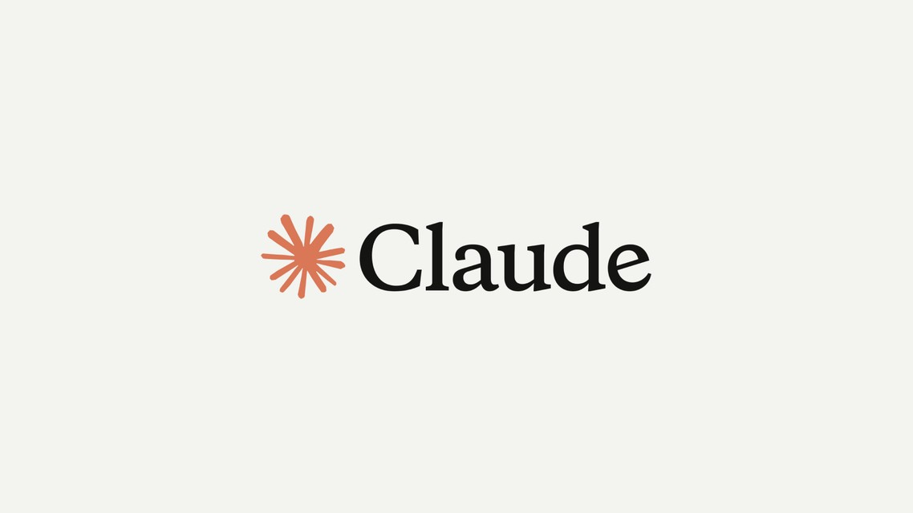
型号存疑 · 独立创作者 · 互动网页简报 · 作者自述
Nikita · @fluxxrider
作者称 Opus 5.6，在 xhigh 档、界面仍显示 5.5 的隐蔽测试里做的；Anthropic 官方型号表尚无 Opus 5.6 或 claude-opus-5-6（查于 2026-11-28 00:56 亚洲/上海）。
一份关于智能爆炸的互动网页简报，不是可下载的 PowerPoint。开头故意做成普通幻灯片，随后自己改写自己，镜头会走进三维场景。方向键翻页，A 自动播放，F 全屏。作者公开的提示词几乎只规定题目和“做到你见过最惊人”，并写明没有另给创意方向；后来说大约 40 分钟、一个 xhigh 代理，按 Opus 5.5 接口计价约 90 美元。值得打开原作自己点，而不是只看转述录屏。
原发布：2026-11-26 00:06:48（亚洲/上海），X 原帖。微信公众号「你丫才美工」2026-11-27 21:09 的转述文称 X 上已有 1000 万浏览，但没有给出原帖链接；本卡以原帖当时的公开数据为准，不把微信文章里的数字当成现时事实。
方法与工具（作者自述）：原帖把作品放到 Claude Artifact，标题是 The Last Boring Slide。作者在回复里公布完整提示词，大意是：做一份关于 AI 未来、也就是智能爆炸的演示；可以完全不带锚定偏见，因为事情确实会变得疯狂；希望这是见过最精心、最惊人的演示，图形和转场随便做；相信你有品味和能力；祝你好运，Claude。作者接着写：Opus 5.6 on xhigh (stealth tested on 5.5)，除了这段提示词，没有另给创意方向。对提问的人还说过：大约 40 分钟、xhigh、一个代理；按 Opus 5.5 接口计价是 90 美元，约占他每周额度的 2–3%。作品是一份可下载的 HTML。作者后来发现，结尾画面倾斜、问出 “What do you want?” 时，呼应了前面那支偏了 1 度的箭头。对“在什么上面渲染”的追问，作者回过“My 4080 super”，并说有些三维场景必须渲染，所以不能把它理解成全程都是轻松的实时网页特效。
数据（2026-11-28 00:57 亚洲/上海 核验）：原帖曝光 12212618，赞 40405，转发 3101，引用 2310，回复 1502，收藏 59562。作者公布提示词的那条回复曝光 1844563，赞 5487。作者在 2026-11-27 01:41（亚洲/上海）自己回过“10M!!”，那是当时过千万的报喜，不是本轮核验数字。作者后来把录屏放到自己的 YouTube 频道 @flixxrider（https://www.youtube.com/watch?v=dHWll-sc0Ss），2026-11-28 00:57 核验播放 4940，不到本板 YouTube 的 2 万门槛，只作打不开网页时的备看，不拿来过线。
社区反馈（X 回复，2026-11-28 00:58 亚洲/上海 抽样，不是全量）：大量惊叹。批评和限制也很清楚：@The_John_Dreic 说加载很久，文件没有为快速打开做过优化；@TruthtideTV 说转了三十秒才出来，挖苦这是“最疯狂的 slop”；@jernejbm 只回“还在加载”。有人打不开或以为被下架，作者因此补了 YouTube 录屏，并说自己这边还能打开，格式是一份 HTML。型号未经官方确认，这一点在回复里也被反复问起。另外，作者多次要求转述帖注明来源，不要不署名就拿走他的原帖。
推广与利益：原帖没有付费合作标记。作者主页写着咨询邮箱。后来出现的 https://thelastboringslide.com/ 带有 Google AdSense，页面里没有写 Nikita 或 @fluxxrider，不能当成作者官方站，也不能拿它的访问量来过线。可交互原作仍以 Claude Artifact 为准。
本轮核对的限度：
型号：作者称 Opus 5.6，并说是在显示为 5.5 的隐蔽测试里做的。2026-11-28 00:56 查过官方型号表和新闻室，没有这一号。只能写成“作者自称”。
提示词是作者自己公布的；中间是否还有未公开的修改，看不到。部分三维场景据作者说需要本机渲染，本板没有复跑，也没有打开那份 HTML 逐项核对哪些是实时、哪些是预渲染。
上板判断：收录（型号存疑）。原帖现时约 1221 万曝光、四万多赞，过线；提示词、用时和花费是作者自己写的，对导演有方法价值。微信文章里的“1000 万”只是转述当时的量级，本轮以原帖 12212618 次曝光为准。
型号存疑 · 独立创作者 · 同人作品 · 作者自述
Chetaslua · @chetaslua
作者称 Opus 5.6；Anthropic 官方型号表尚无此型号（查于 2026-11-25 19:38 亚洲/上海）。仓库三次提交都署名 Co-Authored-By: Claude Opus 5.5。
一支 114 秒、37 个镜头的日式动画同人短片，画面、动作、配乐和人声都由代码生成。值得学的是作者公开的那条提示词：把要表达的情绪（悲伤、温暖、恐惧、喜剧、愤怒）和“用子代理看自己画的、听自己做的”写进要求里，让模型自己检查成片。
原发布：2026-11-25 04:53:25（亚洲/上海），X 原帖。
方法与工具（作者自述）：原帖说是 Opus 5.6 做的，纯代码、没有外部素材，音乐、歌声和画面都是代码。作者紧接着贴了代码仓库和提示词截图：提示词要求做一部这部动画风格的作品、全部纯代码、自己唱背景歌、不用 TTS 和外部库、用子代理检查画面和声音、两分钟以内；截图里同时附了六张原作的参考图，作者写“这些只是给你看灵感”。截图底部显示用时约 20 分 42 秒、总计约 575 万 token。仓库 README：1920×1080、24 帧、2736 帧、37 个镜头、160 BPM；画面是 Python（numpy、opencv、scipy、pycairo、numba、Pillow），声音是零依赖的 Node JavaScript；写明是非官方同人作品，原作和角色属于原作者。
数据（2026-11-25 19:36 亚洲/上海 核验）：原帖曝光 246525，视频播放 156081，赞 3364，转发 146，引用 65，回复 162，收藏 1761。代码那条回复曝光 25226，赞 167。GitHub 60 星、11 个复刻。
社区反馈（X 回复，2026-11-25 19:37 亚洲/上海 抽样，不是全量）：很多人惊叹（中文回复有“神了”“纯代码做到这个地步很了不起”），也有人问花了多久、怎么避开版权。批评同样多：有人直说“你没有那个模型的权限，骗子”；有人认为 Claude 做不到，一定用了第三方生成画面；有人说“只有没认真看过艺术的人才会觉得是杰作”；还有人说这条是“钓鱼帖”。Matthew Berman（@MatthewBerman）2026-11-25 02:53:24（亚洲/上海）发帖说“所有在谈 Opus 5.6 的人都是骗子，他们没有这个模型的权限，那些也不是真的演示”，这条曝光 81408、赞 840（19:36 核验），没有点名；作者随后贴了一条长帖反驳，说 Opus 5.6 正在 Claude Code 里灰度测试，让大家用“2026 年 Karpathy 去了哪”这个问题自测，但这只是作者的说法，不是官方确认。
推广与利益：原帖没有付费合作标记，也没有推广链接。
本轮核对的限度：
型号：作者自称 Opus 5.6，但官方型号表没有，三次提交的署名都是 Claude Opus 5.5。只能写成“作者自称”。
提示词里附了原作的参考图，所以“没有外部素材”只是指成片里没有图片文件，不等于没有参考原作。这是他人版权角色的同人作品，不能商用；本板不转载片中画面，封面是本板自制的文字卡。本板没有复跑。
上板判断：收录（型号存疑）。传播很大（近 25 万曝光、三千多赞），提示词和代码公开，对“怎么让模型自查成片”有学习价值；但型号说法有争议，同人版权也要注意。
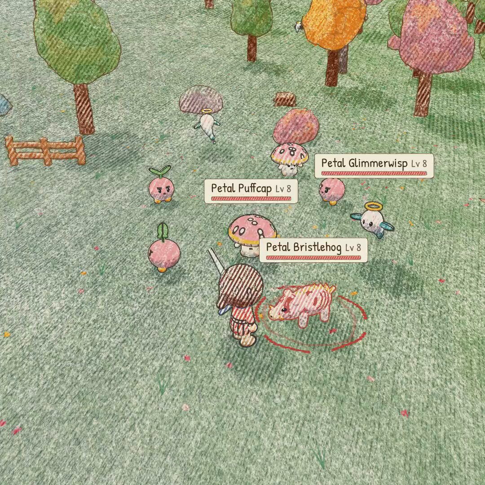
独立创作者 · Claude Fable 5.2 · 作者自述
Kevin Ngo · @kevin_t_ngo
浏览器里就能玩的程序生成开放世界 RPG，画面是铅笔线条和彩铅质感的草地、蘑菇和小怪。作者说没用任何素材、图像生成或 3D 建模工具，画面全是 Claude 写的代码。值得学的是先定一种手绘画风，再让程序生成去铺满整个世界。
原发布：2026-11-25 04:10:45（亚洲/上海），X 原帖。
方法与工具（作者自述）：原帖说是让 Fable 5.2 做的，单个约 300kB 的 HTML，每个像素都由着色器绘制。作者在回复里说没有素材，没用图像生成器或 3D 建模工具；Fable 5.2 做得更好，Opus 5.5 也能做；首版之后他改用 Opus 5.5 加新角色、敌人和区域。
数据（2026-11-25 13:58 亚洲/上海 核验）：原帖曝光 41271，视频播放 19411，赞 1224，转发 87，引用 13，回复 66，收藏 843。
社区反馈（X 回复，2026-11-25 13:56–13:57 亚洲/上海 抽样，不是全量）：多数夸画风（“帽子上的铅笔线”“画风可爱”），也谢谢作者开源；有人问画风是 Fable 自己定的还是作者引导的。批评也不少：有人说文案是“AI slop”“fableslop”；有人指出页面除了 HTML 还加载 JS、CSS、字体等文件，“着色器画每个像素”也是 3D 游戏的常规做法。
推广与利益：作者 X 简介是 fal（AI 模型平台）的 creative engineer。这条原帖没有推广链接，也没说用了 fal。
本轮核对的限度：
原帖发出后，仓库在 2026-11-25 09:59（亚洲/上海）有一次提交，说明写着改用 TypeScript 栈重建：三个职业、技能树、战利品和地下城，之后改成 GitHub Actions 自动部署。所以现在的在线版是构建后的多文件版本，不一定还是原帖说的单个 300kB 文件。没有公开提示词和花费。本板没有复跑。
上板判断：达标。赞过千（1224），能玩、开源；但曝光只有 4.1 万，反馈里有明显批评。学的时候看画风和程序生成，不要拿它当“单文件”的证明。
型号存疑 · 独立创作者 · Three.js · 作者自述
Chetaslua · @chetaslua
作者称 Opus 5.6；Anthropic 官方型号表尚无此型号（查于 2026-11-25 19:38 亚洲/上海）。仓库唯一的首次提交署名 Co-Authored-By: Claude Opus 5.5。
一部 81.6 秒的单文件 Three.js 短片：年轻人骑着大鹈鹕喝茶，穿过集市、追柠檬、黄昏冲出栈桥、夜里穿过几百盏灯笼，最后落在湖上，又合回一张木版画。值得学的是“一份乐谱同时驱动声音和画面”：古筝拨弦点亮灯笼，笛声就是茶杯上的蒸汽。
原发布：2026-11-24 23:40:57（亚洲/上海），X 原帖。
方法与工具（作者自述）：原帖说“Opus 5.6 把 three.js 玩到顶，没有素材”，下一秒回复贴了代码仓库；作者在回复里说仓库就是证明，“是一次生成（one shot）”，有人问“5.6？？”他答“是”。没有公开提示词、token 数和用时。README：只用 three.js r180（内联），没有图片、模型、字体或声音文件，离线可运行；一份乐谱（100 BPM、34 小节）同时驱动合成器和画面；源码分模块放在 src/，tools/build.py 打包成一个 HTML。
数据（2026-11-25 19:36 亚洲/上海 核验）：原帖曝光 303905，视频播放 169778，赞 4182，转发 206，引用 75，回复 166，收藏 1542。GitHub 72 星、15 个复刻，index.html 约 1.89 MB。
社区反馈（X 回复，2026-11-25 19:17 亚洲/上海 抽样，不是全量）：正面的集中在画面（“好美”“这是 three.js 不是插画，让我脑子转不过来”），已经有人把它改成了可玩的版本。批评和疑问：“5.6？？”“感觉是假的”；有人怀疑视频本身是 AI 生成的展示动画；有人说 Claude 做的音乐听起来总是一个味道；也有人挑人体结构的毛病；问提示词、花费和用时的回复在抽样里都没有得到回答。Matthew Berman（@MatthewBerman）2026-11-25 02:53:24（亚洲/上海）发帖说“所有在谈 Opus 5.6 的人都是骗子，他们没有这个模型的权限，那些也不是真的演示”，这条曝光 81408、赞 840（19:36 核验），没有点名；作者随后贴了一条长帖反驳，说 Opus 5.6 正在 Claude Code 里灰度测试，让大家用“2026 年 Karpathy 去了哪”这个问题自测，但这只是作者的说法，不是官方确认。
推广与利益：原帖没有付费合作标记，也没有推广链接。微信视频号“AI奔雷手”转载了这段，标题写“Claude 灰度测试最新模型 Opus 5.6”，那是转载评论，不是作者本人。
本轮核对的限度：
型号：作者自称 Opus 5.6，但官方型号表没有，首次提交署名是 Claude Opus 5.5。只能写成“作者自称”。
“一次生成”是作者自述，仓库只有一次提交，看不到中间过程。本板没有复跑。
上板判断：收录（型号存疑）。三十万曝光、四千多赞，代码公开、乐谱驱动画面的结构很值得学；型号说法有争议，Berman 等人公开质疑。
型号存疑 · 独立创作者 · 纯 Python · 作者自述
Chetaslua · @chetaslua
作者称 Opus 5.6；Anthropic 官方型号表尚无此型号（查于 2026-11-25 19:38 亚洲/上海）。仓库唯一的提交署名 Co-Authored-By: Claude Opus 5.5；作者自己回复说是“从 Opus 5.5 extra 路由过来的”。
一支 65 秒的手绘风动画短片：一只小红狐狸唤醒一座沉睡已久的图书馆，结尾书页化作飞鸟。全部用 Python 画、动和配乐。值得学的是仓库里公开的提示词和镜头说明（CONTRACT.md）：先写清九个镜头要什么，再让模型照着出片。
原发布：2026-11-24 21:53:06（亚洲/上海），X 原帖。
方法与工具（作者自述）：原帖说“Opus 5.6 用纯代码做的”。作者紧接着回复：是从 Opus 5.5 extra 路由过来的，并贴了代码、提示词和一张“证明”截图。README：2048×1152、24 帧、1560 帧；没有图像模型、图片文件、采样或字体，每一笔都来自代码，随机种子固定；用 pycairo、numpy、opencv 等，在 18 核 M5 Pro 上缓存背景后渲染约 7 分钟；提示词在 PROMPT.md，九个镜头的工作说明在 docs/CONTRACT.md；写明是非官方概念片，Anthropic 没有参与或背书。
数据（2026-11-25 19:36 亚洲/上海 核验）：原帖曝光 290676，视频播放 126575，赞 3404，转发 146，引用 59，回复 169，收藏 1376。“代码和证明”那条回复曝光 28582，赞 131。
社区反馈（X 回复，2026-11-25 19:37 亚洲/上海 抽样，不是全量）：多数惊叹，有人说“不管是不是 Opus 5.6，准确度超过一般视频模型”，也有人说“就算不是传统动画也挺酷”。批评：编排和故事连贯性还要打磨；有人回“SLOP”；有人指出 Opus 5.5 和 Sonnet 5.5 的知识截止都在 2026 年 6 月，作者拿来证明新模型的 Karpathy 问题其实只能说明 Claude Code 的系统提示和裸 API 不同，不能证明是新模型。Matthew Berman（@MatthewBerman）2026-11-25 02:53:24（亚洲/上海）发帖说“所有在谈 Opus 5.6 的人都是骗子，他们没有这个模型的权限，那些也不是真的演示”，这条曝光 81408、赞 840（19:36 核验），没有点名；作者随后贴了一条长帖反驳，说 Opus 5.6 正在 Claude Code 里灰度测试，让大家用“2026 年 Karpathy 去了哪”这个问题自测，但这只是作者的说法，不是官方确认。
推广与利益：原帖没有付费合作标记，也没有推广链接。
本轮核对的限度：
型号：作者原帖写 Opus 5.6，自己又说是从 Opus 5.5 extra 路由来的，提交署名是 Claude Opus 5.5，官方型号表没有 Opus 5.6。只能写成“作者自称”。
本板没有复跑，也没有核对渲染用时。
上板判断：收录（型号存疑）。近 29 万曝光、三千多赞，提示词和镜头说明公开，是这三张里方法最完整的；型号说法有争议。
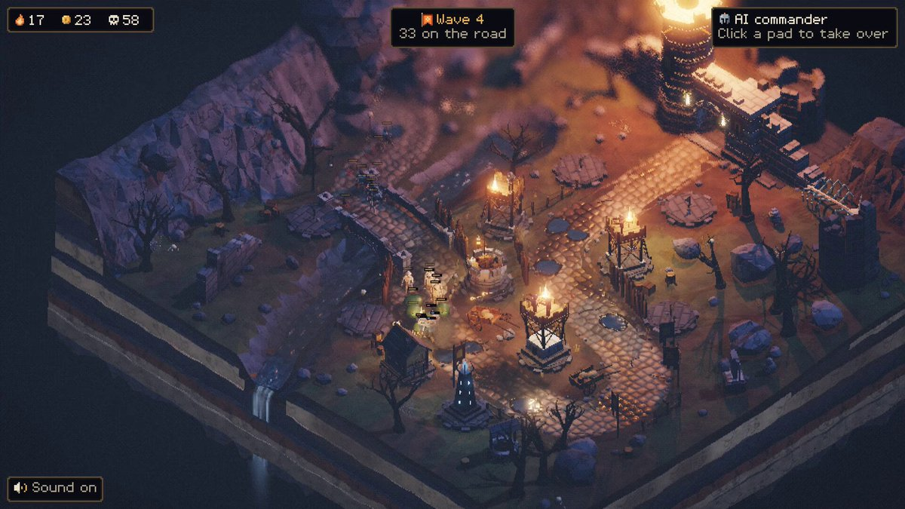
独立创作者 · Claude Fable 5.2 · 作者自述
Kevin Ngo · @kevin_t_ngo
一个单文件 HTML 的等距视角塔防：夜里的营地、火光，雪地、苔地、灰烬和沙地几种地块，浏览器和手机都能玩。值得学的是用暖光和阴影给一个小战场定气氛；仓库的提交说明也值得看，里面一条条修可读性，比如空塔位看不清、飞行敌人走直线太快。
原发布：2026-11-24 14:50:58（亚洲/上海），X 原帖。
方法与工具（作者自述）：原帖只写“让 Fable 5.2 做一个单 HTML 塔防，开源，可在浏览器里玩”，没有公开提示词、轮数或花费。仓库的提交说明写得很细，例如“阴影约占每帧 60%，每帧要画十张阴影贴图”，可以当调优日志看；这些提交是不是全由模型写的，作者没说。
数据（2026-11-25 13:58 亚洲/上海 核验）：原帖曝光 88864，视频播放 42114，赞 1978，转发 100，引用 11，回复 120，收藏 1504。GitHub 78 星。
社区反馈（X 回复，2026-11-25 13:56–13:57 亚洲/上海 抽样，不是全量）：几乎都是正面：“玩了一个小时”“第一个玩超过两分钟的 AI 游戏”“手机上很流畅”“平衡也不错”。也有人说打到第 15 波就不动了，有人觉得节奏偏慢；有人认为显然经过很多轮提示和重试，希望作者公开提示词。
推广与利益：作者 X 简介是 fal 的 creative engineer。原帖没有推广链接。
本轮核对的限度：
没有提示词。本板没有复跑，只确认在线页和仓库都能打开（MIT 许可，仓库 2026-11-24 建立）。
上板判断：达标。近九万曝光、近两千赞、一千五百收藏，反馈正面。导演能学的是氛围和画面可读性，不是玩法本身。
独立创作者 · Fable 5.2 + Opus 5.5 · 作者自述
Easy Riders · @easy_riders · YouTube
一段 90 秒的日式动画片头，把黎曼猜想和历代数学家（都画成同一种机器人脸）剪成一支热血 OP。值得学的是片头节奏：标题卡、人物逐个亮相、高潮定格；作者还公开了 token 账单。
原发布：2026-11-23 18:15:27（亚洲/上海），YouTube 上传时间。
方法与工具（作者自述）：简介只写了用量：Fable 5.2 输入 9.56 亿、输出 670 万 token；Opus 5.5 输入 28.8 亿、输出 1770 万 token；合计约 2075 美元（按当前 API 价）。没写渲染方式，没说是不是纯代码，也没说音乐怎么来的。
数据（2026-11-25 13:55 亚洲/上海 核验）：播放 26597，赞 906，抓到评论 60 条。频道 2.83 万订阅。
社区反馈（YouTube 评论，2026-11-25 13:55 亚洲/上海 抽样，不是全量）：几乎一面倒正面：“2026 十佳动画 OP”“以后每个千禧年难题都该这样”“我会看这样的动画”。有人笑说角色全是机器人，只是换了头发和衣服。有评论把它和一首知名动画主题曲联系在一起；配乐的来源和授权，视频里没有说明。
推广与利益：简介没有推广链接，只放了作者的 Instagram。
本轮核对的限度：
没有教程、提示词或工程文件，只有成片和用量数字。本板没有复跑。
上板判断：达标。播放过两万、赞近千，反馈很好。方法几乎没公开，学的是片头结构和节奏。
教程 · 作者自述 · 含推广
Thomas Lundström · @thomaslundstrm · Claude + Blender + Seedance 2.5
一支 47 秒耳机广告的完整拆解：先和 Claude 定概念，再让 Claude 在 Blender 里搭灰模、定机位，用 Seedream 5.5 做素材，最后只用了三次 Seedance 2.5 生成。值得学的是“先做场景图，再照着场景搭灰模”这一步，评论区也最认这一条。
原发布：2026-11-20 23:04:26（亚洲/上海），YouTube 上传时间。
方法与工具（作者自述）：章节：0:00 成片；2:15 用 Claude 定广告概念；4:04 Claude 搭 Blender 灰模；7:04 在 Artlist 用 Seedream 5.5 做素材；9:07 在 Artlist 用 Seedance 2.5 生成视频；13:14 声音、音乐和 Ultimate Vocal Remover；15:09 用 Claude 做 HyperFrames 动态图形；15:48 成本。视频标签写了 Fable 5.2，简介正文没写具体型号。成片的大部分画面是 AI 视频，不是 Blender 渲的。
数据（2026-11-25 13:55 亚洲/上海 核验）：播放 127010，赞 2353，抓到评论 60 条。频道 3.21 万订阅。
社区反馈（YouTube 评论，2026-11-25 13:55 亚洲/上海 抽样，不是全量）：评论正面。高赞是“先做场景再搭灰模，能少很多次重抽”这条技巧；不少人想看 HyperFrames 动态图形的单独教程。也有人调侃讲解视频可能比广告本身做得还久。
推广与利益：简介第一行是 Artlist 节日 40% 折扣推广链接；Higgsfield、Magnific、Wispr Flow、Gling 等也都是推荐码链接；另推作者的 Skool 社区和 GenHQ 付费教育；作者置顶评论也是 Artlist 链接。成片全在 Artlist 里生成。
本轮核对的限度：
成片主体是 Seedance 2.5 生成的 AI 视频，Claude 和 Blender 负责概念和灰模。和板上 Dan Kieft、Rourke 两张教程的路线相近，这张多的是“广告”这种片型和成本拆分。本板没有复跑。
上板判断：达标。12.7 万播放、两千多赞，是这一轮传播最大的方法视频。推广很重，Artlist 可以换成别的生成平台。
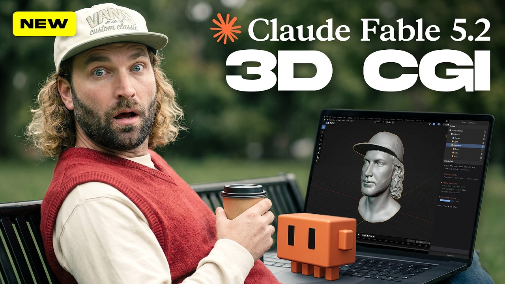
教程 · 作者自述 · 含推广
Rourke · @RourkeHeath · Claude Fable 5.2 + Blender
原标题：Fable 5.2: Make 3D Animations With Claude and Blender。开头结尾是真人实拍，中间约 35 秒 CG 全由 Claude Fable 5.2 写场景、驱动 Blender 渲出，作者说这一段没有 AI 视频。值得学的是 10 步：需求、世界和角色、分镜、低清动态分镜、批注循环、渲染、max pass、按实拍调色、剪辑、声音，以及装 FFmpeg 让 Claude 看自己的帧。
原发布：2026-11-19 05:36:53（亚洲/上海），YouTube 上传时间（平台记的是 2026-11-18 UTC）。
方法与工具（作者自述）：作者片中和简介：开头和结尾是两段真人实拍，中间约 35 秒 CG 全是 Claude Fable 5.2 在 Claude Code 里写场景、驱动 Blender 渲出来的，作者明确说这一段没有用 AI 视频。真人素材另用 Higgsfield 上的 Seedance 2.5 换光换背景。装 FFmpeg 让 Claude 能看自己的帧。10 步：需求、世界和角色、分镜、低清动态分镜、批注循环、正式渲染、max pass、按实拍调色、剪辑、声音。
数据（2026-11-25 12:54 亚洲/上海 核验）：播放 76151，赞 1262，评论 28。2026-11-22 约 04:28 的记录是 54944 播放、982 赞、45 条评论，评论数比那时少，原因不明。
社区反馈（YouTube 评论，2026-11-25 12:54 亚洲/上海 抽样，不是全量）：高赞评论集中批评 Higgsfield 广告（“another higsfield AD”“你根本不需要 Higgsfield”，还有人因此取关）；也有人称赞“真人夹 CG 一镜到底”的想法，或问换成更便宜的 Opus 5.5 行不行。
推广与利益：简介第一行是 Higgsfield 黑五 65% 折扣推广链接，工具链接带推荐码；片中口播推作者自己的 GenHQ 付费教育和接单平台；免费指南要留邮箱才能下载。
此前核对的限度（仍有效）：
作者说 Fable 擅长场景、产品、材质和光，不擅长写实人物和动物。30 秒在 MacBook 上要渲 2.5 到 3 小时，云渲染约 5 美元。
片尾的 Amazon 广告是另一条“写实路线”：Blender 只出灰模镜头和布局，Nano Banana 画首帧，几乎每一镜都是 Seedance 2.5 生成的。那一段是 AI 视频，别和开头机器人片混在一起。
标题在 2026-11-22 是 “Claude + Blender Is The Best Way To Make 3D Animations (Fable 5.2 Full Course)”，本轮已改成 “Fable 5.2: Make 3D Animations With Claude and Blender”。本板没有复跑。
上板判断：达标。七万多播放、一千多赞，方法讲得最完整；但推广很重，学的时候要把 Higgsfield 那一段当成可选。
案例 · 作者自述
The Dor Brothers · @thedorbrothers
约 1 分 42 秒的预告片。人给出想法和方向，并做了半手工剪辑。作者说画面生成、视频生成，以及对已有片段的后期，都交给 Claude Code 代理自动完成，这些步骤他们没有亲手做。值得学的是角色设定表怎么用来保持同一张脸，以及把更多步骤交给代理之后，哪些镜头会开始不喜欢。
原发布：2026-11-19 03:41:53（亚洲/上海），X 原帖。
方法与工具（作者自述）：作者回复：85% 由 Claude Code 自动完成，没有手动生成图片、视频，也没有手动做已有片段的后期；人只做半手工剪辑，并给代理想法和方向。耗时回复只有一句 “a few hours”。没有写画面和视频生成用的是哪个模型或库。
数据（2026-11-25 12:53 亚洲/上海 核验）：原帖曝光 434688，视频播放 271586（两者不是同一个数），赞 4161，转发 853，引用 171，回复 245，收藏 1451。自动化说明那条回复曝光 8135、赞 181。
社区反馈：沿用 2026-11-19 的抽样：有人说好看或好笑，也有人觉得没那么有趣，或批评用现实人物做恶搞。本轮没有重新抽样。
推广与利益：原帖 paid_partnership 为 false。The Dor Brothers 是商业制作公司，这条也在给自己的自动化能力做展示。
此前核对的限度（仍有效）：
“85% 自动化”是作者后来的说法，不是片内字幕。这条预告他们回复是 “a few hours”。另一条帖说近期短片大多自动化，空闲时要 2 到 6 小时。他们还说有些镜头不喜欢，例如 Russell 那镜，因为让 AI 多做是一种研究，会碰到收益递减。
有人问用了什么库，截至 2026-11-19 19:19（亚洲/上海）作者还没答。不要把 Seedance、Midjourney 或其他生成库写到这部预告上。官网客户片仍写人工剪辑、声音和调色，那是另一条流程。
暂未找到这部片子的完整教程或工具清单。不要把别人的 GTA 教程当成他们的方法。未看完，未复跑。
上板判断：达标。曝光四十多万、赞四千多，反馈以正面为主但有争议；能学角色设定表保持同一张脸，以及哪些步骤可以交给代理。

Dan Kieft · 教程 · 跨工具
原标题：Claude + Blender Is The Best Way To Make AI Videos (Full Course)。先用 Blender 锁住镜头和空间，再交给生成模型出片，不是纯代码成片。
原发布：2026-11-17 00:33:20（亚洲/上海），YouTube 上传时间。
方法与工具（作者自述）：作者简介写：先用 Blender + Claude 做出可控的镜头、角色和场景参考，再把它交给 Seedance 2.5 生成视频。提示词公开在配套页。本板此前记的 Higgsfield / Nano Banana Pro 锚点来自片中流程；作者没有写进阶段落用的 Claude 型号。
数据（2026-11-25 12:54 亚洲/上海 核验）：播放 440270，评论 60 条以上被抓到（平台未返回赞数）。
社区反馈（YouTube 评论，2026-11-25 12:54 亚洲/上海 抽样，不是全量）：抽样里有人说开头两分半像好莱坞电影、说他讲得平静实用；也有人照着 Workflow 01 做，说 Seedance 还是会乱，或者问整体要花多少钱（这条评论 206 赞）。
推广与利益：简介第一行是 Higgsfield 黑五优惠的推广链接（dankieft.com/higgsfield），另推作者的 Skool 社区。不是中立评测。
此前核对的限度（仍有效）：
Claude 写提示词并做进阶 MCP 搭景。初学路线推荐 Opus 5.5，进阶用的型号没有写明。成片走 Higgsfield / Nano Banana Pro 锚点，再由 Seedance 2.5 生成。作者公开了配套提示词。课程含付费插件推广。本板未看完全片，也未复跑。
上板判断：达标。播放四十多万、反馈以正面为主；Blender 锁运镜再交给视频模型，正是导演最需要的可控性。
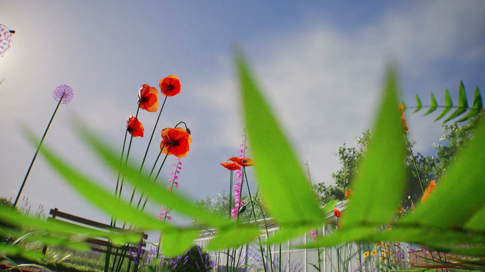
BubbleBrain · Claude Fable 5.2 · 案例＋源码
约 110 秒的猫眼高度花园。作者仓库写明代码由 Claude（claude-fable-5-2）在 Claude Code 里写成，画面和声音由这段代码计算，不是 Blender、Three.js 或视频生成。
原发布：2026-11-16 21:00:55（亚洲/上海），X 原帖。
方法与工具（作者自述）：作者仓库写明代码由 Claude（claude-fable-5-2）在 Claude Code 里写成，画面和声音都由代码算出来。作者回复：用的是 Claude Ultra 套餐，渲染大约 3 小时，没有用 Blender 或 Unreal（“No. it's just code.”）。
数据（2026-11-25 12:53 亚洲/上海 核验）：原帖曝光 108743，视频播放 60272，赞 1411，转发 98，回复 74，收藏 826。
社区反馈（X 回复，2026-11-25 12:55–13:00 亚洲/上海 抽样，不是全量）：抽样以惊叹为主，特别提到声音也是代码生成；也有人不信这是 Fable 做的，或追问成本和耗时。回复里一些长篇技术解释来自 @grok 自动回复，不是作者原话，本板不采用。
推广与利益：原帖 paid_partnership 为 false。
此前核对的限度（仍有效）：
低机位、步态和视线弹簧、曝光与声音绑在同一时间轴，并用抽样帧做检查。暂未找到公开的逐步复刻教程。只能在 Apple Silicon + Metal 上跑，Windows 不能直接运行。仓库没有 LICENSE，不能据此当作可改写或可商用。本板未看完全片，也未跑渲染脚本。
上板判断：达标。十万级曝光、正面反馈，“画面和声音同一条时间轴”对导演有直接启发。

Riley Brown · Claude Fable 5.2 · Python + Blender · 成片 · 制作拆解
2 分 19 秒的动画短片：Clawd 给自己造身体，送出生日礼物。作者称 Fable 5.2 / Claude Code 写 Python，在 Blender 里出片，并用 RunPod 云渲染。制作拆解页有起始提示词、流程、渲染设置和 52 镜故事板，没有成片播放器，也没有可下载源码。
原发布：2026-11-15 00:17:32（亚洲/上海），YouTube 上传时间；X 宣传帖晚 16 分钟（00:33:37）。
方法与工具（作者自述）：作者原帖：一条提示词，Fable 5.2 在 Blender 里用 Python 建出全部资产（5 个角色和道具、7 个场景），约 4.5 小时，4K 两分钟。制作拆解页另写了 RunPod 云渲染、渲染设置和 52 镜故事板。
数据（2026-11-25 12:53 亚洲/上海 核验）：X 原帖曝光 243541，视频播放 103637，赞 2029，回复 222，收藏 2115。YouTube（作者第二频道 rileybrown2）播放 8868，赞 208，评论 23（同一时间核验）。
社区反馈（X 回复，2026-11-25 12:55–13:00 亚洲/上海 抽样，不是全量）：X 和 YouTube 的抽样都以夸赞为主（“best AI-made video I’ve seen”）；有人问 4.5 小时里人工剪了多少、代码是否开源、是不是 Claude 付了钱。作者对“人工剪辑”的追问只回了一个 “yep”，含义不清。
推广与利益：原帖 paid_partnership 为 false。
此前核对的限度（仍有效）：
本板未复跑，也不把它当成已端到端核实的完整教程，未审片。时长来自页面元数据。
上板判断：达标。X 上二十多万曝光、正面反馈，而且有完整拆解页。

Pat Simmons · Fable 5.2 · 过程展示
过程展示：Claude 驱动 Blender、写场景，Cycles 或云渲染出图，不是视频生成模型。另附书面教程、三份完整提示词与技能包，含静帧批评循环。尚未逐步复跑。技能包里的 Blender 5.1.2 是软件版本。
原发布：2026-11-14 05:49:09（亚洲/上海），YouTube 上传时间。
方法与工具（作者自述）：作者简介：让 Claude Fable 5.2 控制 Blender，做了 Stahl House 漫游、瓦伦西亚艺术科学城和一部带配音的恐怖游戏，并讲清每次花了多少钱。书面页有提示词、Blender 技能包和产出。
数据（2026-11-25 12:54 亚洲/上海 核验）：播放 71805，赞 1061，抓到评论 60 条。
社区反馈（YouTube 评论，2026-11-25 12:54 亚洲/上海 抽样，不是全量）：高赞评论有惊叹，也有三维从业者担心饭碗；有人说远看不错、凑近一看就粗糙，还问植物怎么做得不像一团。多条评论说书面教程页 404，本轮打开是 200，标题是 “Claude Fable 5.2 in Blender: Three Builds, Real Costs”。
推广与利益：简介推作者自己的每日邮件订阅 aiformortals。
此前核对的限度（仍有效）：
排序仍用视频日期 2026-11-14。书面页可见 November 17, 2026，JSON-LD 为 2026-11-18 11:29 亚洲/上海，两说并存，不拿文章日期覆盖视频日期。
上板判断：达标。七万播放、千赞，教程和技能包都公开。

Marcus · Claude Fable 5.2 · 教程
用 Claude Code 写 Python，不必亲手打开 Blender，由 Blender 在后台做出三维香水广告。教程标题写明 Claude Fable 5.2。配套 skill pack 在站外。尚未逐步复跑。
原发布：2026-11-13 23:49:53（亚洲/上海），YouTube 上传时间。
方法与工具（作者自述）：作者简介：Fable 5.2 写 Python，在 Blender 关着的情况下后台出图，分三级做一瓶虚构香水：瓶子、10 秒广告、16:9 和 9:16 的 20 秒广告；先出预览静帧再长渲染。
数据（2026-11-25 12:54 亚洲/上海 核验）：播放 879，赞 23，评论 2（其中 1 条是作者自己的置顶）。
社区反馈（YouTube 评论，2026-11-25 12:54 亚洲/上海 抽样，不是全量）：唯一一条外部评论说“看起来不错，但太花时间”。样本太少，谈不上社区认可。
推广与利益：技能包要加入作者的 Skool 社区才能拿；简介还推作者的 AI 代理公司和咨询预约。
上板判断：建议移除。播放不到一千，达不到“大量真实传播”；内容和 Dan Kieft、Pat Simmons 两张教程重复。

Scott · Claude Fable 5.2 · Three.js
用 Claude Fable 5.2 制作，在 Three.js 里渲染。除角色外都是程序生成。暂未找到公开教程。未审片。
原发布：2026-11-13 23:24:00（亚洲/上海），X 原帖。
方法与工具（作者自述）：作者原帖：Fable 5.2 制作，three.js 渲染；2 小时、200 万 token、迭代很多次；除角色外都是程序生成。作者回复说只用了 2 个会话。
数据（2026-11-25 12:53 亚洲/上海 核验）：原帖曝光 54723，视频播放 31115，赞 467，回复 44，收藏 280。
社区反馈（X 回复，2026-11-25 12:55–13:00 亚洲/上海 抽样，不是全量）：中文和英文回复多在夸画面（“不知天上宫阙”）和 token 成本低；也有人直接说 “Looks bad!”“slop”，或问是真能玩还是只是视频。
推广与利益：原帖 paid_partnership 为 false。
上板判断：达标。刚过五万曝光的门槛，反馈多数正面；角色和程序化场景的分工值得看。

Chetaslua · Claude Fable 5.2 · Three.js
用 Claude Fable 5.2 和 Three.js 做的三维成片。作者写明成片没有外部素材。暂未找到公开教程。未审片。
原发布：2026-11-13 17:39:38（亚洲/上海），X 原帖。
方法与工具（作者自述）：作者原帖只有一句：Fable 5.2 配合 three.js 做到这个程度，完全没有外部素材。没有写提示词、耗时或成本。
数据（2026-11-25 12:53 亚洲/上海 核验）：原帖曝光 198397，视频播放 104552，赞 3747，回复 159，收藏 1674。
社区反馈（X 回复，2026-11-25 12:55–13:00 亚洲/上海 抽样，不是全量）：抽样以夸画面为主，尤其是寺庙、红枫和龙的尺度感；也有人说自己跑不出同样结果，或问花了多少钱，作者未答。
推广与利益：原帖 paid_partnership 为 false。
上板判断：达标。近二十万曝光、正面反馈；可以学“无外部素材”下的场景设计。
指定参考·制作细节待核实
傅盛 · 指定参考
指定参考，制作细节待核实，不计入已核实案例。视频全名：这一刻我等了三年！Fable5.2手搓王者荣耀仅仅只用了一晚！页面显示 UP 主傅盛。可见发布时间是 2026-11-13 21:31:30，页面没有时区，所以只记到这一天。画面是该视频的官方封面。
原发布：页面显示 2026-11-13 21:31:30，页面本身没写时区，所以只记到日期。
方法与工具（作者自述）：标题写 Fable5.2 手搓王者荣耀、只用了一晚。页面没有写工具链、提示词或源码。
数据：本轮读不到：哔哩哔哩对盒子的公开接口和页面都返回 412（风控），换抓取渠道只拿到标题、发布时间和官方封面，没有播放、点赞、弹幕数。
社区反馈：未能抽样评论。
推广与利益：UP 主傅盛。是否有商务合作，本板未能查看。
此前核对的限度（仍有效）：
2026-11-19 打开该页时，播放器需要登录。未登录，未观看。正文没有 sanwan 链接、没有 Starfall 名称，也没有 X 账号。不能据此并到别的项目，也不能把 UP 显示名以外的身份当成已经核实。模型只记作者标题标注的 Fable 5.2；制作细节待核实。工具未知，页面没有写 Blender 或 three.js。暂未找到该 BV 对应的公开教程或源码。
上板判断：无法核实。这是你指定的参考，本板读不到传播数据，也看不到方法。要么你确认保留为“指定参考”，要么移除。封面已换成该视频的官方封面，不再用页眉截图。
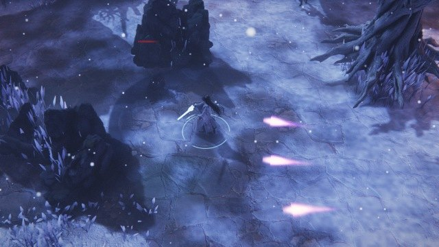
案例 · 可玩 · 作者自述
歸藏 · @op7418 · Claude Fable 5.2
浏览器里可玩的一幕仙侠动作：小怪和 Boss。人只定了国风仙侠，提供工具，要求先看参考片、先做调研，并用白话试玩了 7 轮。Claude Fable 5.2 负责协调和搭建；部分测试跑过 Opus 5.5。概念图走即梦，三维和绑定走 Tripo，音乐走 Suno，运行是 three.js。不是一次做完。
原发布：2026-11-12 09:43:55（亚洲/上海），X 原帖。
方法与工具（作者自述）：作者自述：Claude Fable 5.2 负责协调和搭建，部分测试用了 Opus 5.5；即梦出概念图，Tripo 做三维和绑定，Suno 出音乐，three.js 运行。不是一次做完，中间改了很多轮，最后做成了技能。
数据（2026-11-25 12:53 亚洲/上海 核验）：原帖曝光 308683，视频播放 104912，赞 1181，转发 124，引用 61，回复 282，收藏 979。更正帖（4.5 亿 token）曝光 10210。
社区反馈：沿用 2026-11-19 的抽样：有人试玩后称赞，也有人说第一波太难，或仍在引用未更正的 45 亿。本轮没有重新抽样。
推广与利益：原帖 paid_partnership 为 false。技能以 AGPL-3.0 开源。
此前核对的限度（仍有效）：
原帖写成 “45 亿 token”，作者几分钟后更正：是 4.5 亿 Token，语音输入打错了。说明页也是约 6 小时、4.5 亿 Token，其中一部分是 Opus 5.5 的测试。不要把 45 亿当成事实。作者后来说还做了技能，并补充即梦、Tripo 和压缩。作者不把自己写成游戏程序员。
技能文档和脚本是 AGPL-3.0。演示游戏的画面、模型、声音、音乐和文字版权归 2026 歸藏，可以玩、可以分享链接，不能据此当成可商用素材。作者说这条技能只在这一个项目上从头走到尾，另有一次只到规划的对照。不要写成每次都能做出同样的质量。未试玩，未复跑。
不是一次做完 token 更正 即梦与 Tripo
上板判断：达标。三十万曝光、正面为主，技能和说明页公开，是少见的完整工作流。
Blendi · Fable 5.2
一座吉卜力手绘风格的山谷，可以走进去散步。土地、云和村庄都是代码画出来的。
原发布：2026-11-12 09:43:45（亚洲/上海），X 原帖。
方法与工具（作者自述）：作者原帖：用 Fable 5.2 做的吉卜力风场景，可玩、开源。没有写提示词或耗时。
数据（2026-11-25 12:53 亚洲/上海 核验）：原帖曝光 73473，视频播放 33779，赞 1830，回复 72，收藏 1326。
社区反馈（X 回复，2026-11-25 12:55–13:00 亚洲/上海 抽样，不是全量）：抽样里有人夸画风、说开源最重要；也有人说草不够好、电脑带不动、村子进不去，“不是真的开放世界”，还有人说这是“偷来的画风”。
推广与利益：原帖 paid_partnership 为 false。
此前核对的限度（仍有效）：
Three.js 项目，非 Blender。型号依据原帖，演示页本身没写 Claude。本次检索未找到原作完整制作教程，可从源码改造入手。
上板判断：达标。七万曝光、近两千赞、源码公开，反馈正面但有画风来源的争议。

APIMODELS · 教程
命令行用 Python 驱动 Blender：先渲染几张预览图再出完整 MP4。页面写明测的是工具链，不是某一个模型。
原发布：页面只写到 2026-11-12，没有钟点。
方法与工具（作者自述）：第三方教程页：命令行用 Python 驱动 Blender，先渲染预览图再出 MP4。页面写明测的是工具链，不是某个模型。
数据：网页教程，没有公开的浏览、点赞或评论数。
社区反馈：找不到公开评论。
推广与利益：APIMODELS 自称聚合 180 多个模型、最高比官方价低 95% 的 API 平台，教程同时是引流内容。
上板判断：建议移除。没有任何可核实的传播和社区反馈；方法已经被 Pat Simmons、Rourke 等更完整的教程覆盖。

APIMODELS · 教程
用 renderAt(t) 让 Three.js 每一帧可复现，再用 Playwright 和 FFmpeg 导出 MP4。页面写明测的是工具链，不是某一个模型。
原发布：页面只写到 2026-11-12，没有钟点。
方法与工具（作者自述）：第三方教程页：用 renderAt(t) 让 Three.js 每一帧可复现，再用 Playwright 和 FFmpeg 导出 MP4。
数据：网页教程，没有公开的浏览、点赞或评论数。
社区反馈：找不到公开评论。
推广与利益：APIMODELS 自称聚合 180 多个模型、最高比官方价低 95% 的 API 平台，教程同时是引流内容。
上板判断：建议移除。没有可核实的传播和反馈；同类方法已有 Chase AI（23 万播放）那张卡。
Kevin Ngo · Claude Fable 5.2 · Python + Blender
Claude Fable 5.2 做的动画节目片头。画面是代码：Python 做动画，Blender 渲染。暂未找到原作完整教程。未审片。
原发布：2026-11-11 23:35:38（亚洲/上海），X 原帖。
方法与工具（作者自述）：作者原帖：Claude Fable 5.2 做的动画片头，画面全是代码，Python 做动画，Blender 渲染。没有公开提示词或流程。
数据（2026-11-25 12:53 亚洲/上海 核验）：原帖曝光 29050，视频播放 12377，赞 570，回复 54，收藏 374。
社区反馈（X 回复，2026-11-25 12:55–13:00 亚洲/上海 抽样，不是全量）：抽样很正面（干净、温暖、音效好），但多条在说手还是有问题；很多人追问提示词和流程，作者在样本里没有回答。
推广与利益：原帖 paid_partnership 为 false。
此前核对的限度（仍有效）：
本次检索未找到原作完整教程；此为相邻基础教学，非原作复刻，配套技能包在站外。
上板判断：边缘。反馈正面，但曝光不到五万、赞不到一千，而且没有方法可学。卡上的“相邻教程”是 879 播放的 Marcus 视频，这条链接也建议一起拿掉。
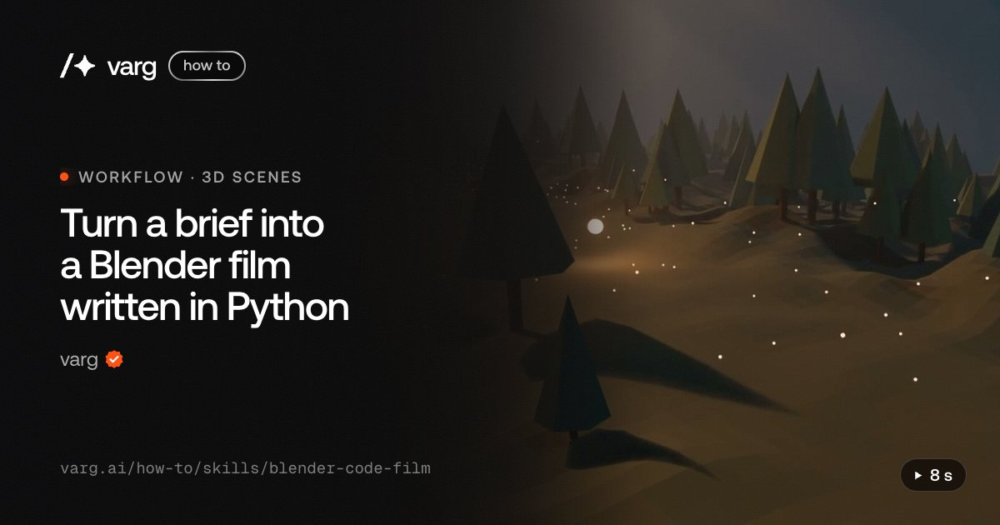
vargHQ · 教程
一份可安装的技能：用单支 Python 在 Blender 里做短片，先出静帧再渲染，最后用 ffmpeg 封装。页面把 Fable 5.2 写成可用代理之一，没有写明示例短片用的是哪一个模型。
原发布：页面标的是 2026-11-11 07:18:06（亚洲/上海）。
方法与工具（作者自述）：vargHQ 的可安装技能：单支 Python 在 Blender 里做短片，先出静帧再渲染，ffmpeg 封装。页面把 Fable 5.2 列成可用代理之一，没写示例片用的是哪个模型。
数据：技能页和 GitHub 目录，没有单独的传播数据。
社区反馈：找不到公开评论。
推广与利益：varg.ai 是商业 AI 视频生成和 API 平台，技能页同时是产品介绍。
上板判断：建议移除。没有可核实的传播和反馈。

Matt Shumer · Fable 5.2（作者声明） · 可玩
浏览器里可以开车、开直升机或步行的早期局部城市，范围在 Flatiron 一带。不是完成的 GTA，也不是作者说的七天计划已经做完。两条帖是同一个项目：06:27 的首发演示，08:10 的实玩补证。
原发布：2026-11-11 06:27:08（亚洲/上海），X 原帖。
方法与工具（作者自述）：作者原帖：“Rockstar 做了 8 年，Fable 5.2 要在 7 天里做完”；补证帖说当时才做了约 13 小时。方法视频简介写：一个月用了 4000 亿 token，讲单代理、两种多代理做法、“gauntlet loop”，以及 16 小时做出纽约开放世界的逐条提示词。可玩页写用 Blender 和 three.js。
数据（2026-11-25 12:53 亚洲/上海 核验）：原帖曝光 3850507，视频播放 1651727，赞 7515，回复 676，收藏 1939。补证帖曝光 1044467，赞 2586。方法视频播放 10780，赞 227（同一时间核验）。
社区反馈（X 回复，2026-11-25 12:55–13:00 亚洲/上海 抽样，不是全量）：两极分化。原帖回复里很多人骂“garbage”，说颜色平、贴图有 bug、物理半成品，拿它和 GTA 比是误导；也有人觉得在进步、受启发。方法视频评论里有人质疑模型刚发布两天怎么可能用了一个月，或说他是拿了 Anthropic 的钱。
推广与利益：原帖 paid_partnership 为 false。方法视频推作者的 newsletter（somethingbig.ai），可玩页也在这个域名下；作者简介留了商务赞助邮箱。
此前核对的限度（仍有效）：
作者原帖写的是 Fable 5.2，帖子里没有出现 Claude 这几个字。官方型号全称是 Claude Fable 5.2。可玩页自己写明用 Blender 和 three.js 做，在 Chrome 里运行、不用安装。本板打开过这个早期局部世界，没有把它玩成一座完成的城。方法视频是作者的公开说明，简介里写了提示词和多代理循环；本板没有看完这条视频，不摘录提示词。暂未找到 GitHub 源码。
上板判断：边缘。传播非常大，但反馈不能说是正面，“7 天做完 GTA”的说法也被质疑。保留的理由是方法视频里多代理和验收循环有学习价值。是否保留由你决定。

Kevin Ngo · Claude Fable 5.2 · Python + Blender
Claude Fable 5.2 做的 90 年代玩具广告。画面是代码：Python 做动画，Blender 渲染。暂未找到原作完整教程。未审片。
原发布：2026-11-10 09:55:16（亚洲/上海），X 原帖。
方法与工具（作者自述）：作者原帖：Claude Fable 5.2 做的 90 年代玩具广告，画面全是代码，Python 做动画，Blender 渲染。没有公开提示词或流程。
数据（2026-11-25 12:53 亚洲/上海 核验）：原帖曝光 31915，视频播放 13014，赞 769，回复 61，收藏 374。
社区反馈（X 回复，2026-11-25 12:55–13:00 亚洲/上海 抽样，不是全量）：抽样正面，夸 VHS 倒带和跟踪线做得像；也有人追问提示词、问旁白是不是也是代码做的，作者在样本里没有回答。
推广与利益：原帖 paid_partnership 为 false。
此前核对的限度（仍有效）：
本次检索未找到原作完整教程；此为相邻基础教学，非原作复刻，配套技能包在站外。
上板判断：边缘。反馈好，但曝光不到五万、赞不到一千，而且没有方法可学。卡上的“相邻教程”同样是 879 播放的 Marcus 视频。

Felix Rieseberg · Fable 5.2（作者声明） · 可玩
浏览器里的第一人称关卡。开始画面能看到任务、坚守、难度、Deploy 和操作说明。点 Deploy 时超时，所以没有测到进入后的玩法。原帖日期仍是 2026-11-10 06:50:32（亚洲/上海）。没有单独的修改完成时间，不把日期改晚。
原发布：2026-11-10 06:50:32（亚洲/上海），X 原帖。
方法与工具（作者自述）：作者原帖：想测试 Fable 5.2 在没有人工反馈时一次提示的质量；模型、声音、贴图全部从零生成；按 API 价约 550 美元、约 270 万输出和 4.45 亿输入 token（大量缓存），用了 8 小时。提示词在作者回复里。
数据（2026-11-25 12:53 亚洲/上海 核验）：原帖曝光 4493270，视频播放 2127818，赞 15056，转发 1171，回复 861，收藏 10394。提示词回复曝光 209135，赞 1784。
社区反馈（X 回复，2026-11-25 12:55–13:00 亚洲/上海 抽样，不是全量）：抽样多是称赞（手机上也能玩、“8 小时从零做完”），有人照着做了多人版；也有人问“到底有多少游戏内容”，或抱怨设备跑不动。作者没有官方仓库。
推广与利益：原帖 paid_partnership 为 false。Felix Rieseberg 的 X 简介写 “I build things @AnthropicAI”，算 Anthropic 内部的人在展示自家模型。
此前核对的限度（仍有效）：
作者原帖写的是 Claude Fable 5.2 一次生成、当时没有人工反馈。页面上 Felix 的署名说明接着写：那次实验之后，他又花了两个小时改武器模型、声音和玩法。现在打开的可玩页是作者改过的演示，不是那次完全没动过的一次生成。页面链到一次生成的版本，本板没有记下那个确切地址，所以这里不放。页面自己说表面、机器和声音是在浏览器里生成的。提示词在作者回复里。第三方镜像不当作原仓库。
上板判断：达标。四百多万曝光、一万五千赞，提示词公开，是“单提示词能到哪”的标杆。

TechFriendAJ · Claude Fable 5.2 · Python + Blender
名称来自作者技术说明里的描述，不是另行公布的正式片名。约 18.5 秒。作者回复写明 Claude Fable 5.2 在 Claude Code 里写 Python：绑定、几何、自行车连杆和五个镜头。
原发布：2026-11-10 06:47:50（亚洲/上海），X 原帖。
方法与工具（作者自述）：作者技术说明：Claude Fable 5.2 在 Claude Code 里，不打开 Blender 界面写了约 4800 行 Python，在 RTX 5080 上 56 分钟渲完 444 帧；Blender 5.2.3 是软件版本，Cycles 渲染，ffmpeg 出片。作者回复说仍是单条提示词，并且专门要求“尽量写实”所以它选了 Blender。
数据（2026-11-25 12:53 亚洲/上海 核验）：原帖曝光 171351，视频播放 100990，赞 917，收藏 256。技术说明那条曝光 6039。
社区反馈（X 回复，2026-11-25 12:55–13:00 亚洲/上海 抽样，不是全量）：以玩笑和惊叹为主；也有人挑刺说“踏板速度和车轮对不上，slop”，或者说这不是单提示词 SVG（原本的鹈鹕测试是 SVG）。
推广与利益：原帖 paid_partnership 为 false。agent trace 公开在 Hugging Face。
此前核对的限度（仍有效）：
Blender 5.2.3 是软件版本，用 Cycles OptiX 渲染，ffmpeg 出片。用了 PolyHaven 的 CC0 天空和地面，不是无外部素材。公开的 agent trace 能看迭代，但不是已独立验证的逐步教程。未审片，也未把 trace 逐条跑通。
上板判断：达标。十七万曝光，trace 公开，可以看代理每一步怎么迭代。

Ethan Mollick · Claude Fable 5.2 · 450 多个世界
一场不用操作的飞行。作者原帖写让 Fable 5.2 来做；Claude 写代码和世界，three.js 在浏览器里现场生成场景。门里已经是下一个世界，没有剪辑，也没有淡入淡出。原帖写 25000 个代理做了 450 多个世界，仓库写 471 个。未玩完。
原发布：2026-11-10 06:21:25（亚洲/上海），X 原帖。
方法与工具（作者自述）：作者原帖：让 Fable 5.2 做一段不用操作、穿过传送门的三维旅程；25000 个代理用代码做了 450 多个世界，灵感来自书、艺术和地方。仓库 README 写 471 个世界。
数据（2026-11-25 12:53 亚洲/上海 核验）：原帖曝光 111758，视频播放 54822，赞 1937，回复 226，收藏 1054。
社区反馈（X 回复，2026-11-25 12:55–13:00 亚洲/上海 抽样，不是全量）：可读的回复多在讨论代理规模和“规则手册”，有人照着做了自己的版本；但这条回复区混有大量离题和辱骂，抽样代表性差。
推广与利益：原帖 paid_partnership 为 false。Ethan Mollick 简介写沃顿商学院教授、研究 AI，并在推自己的新书。
上板判断：达标。十一万曝光、源码公开，可以学“一段旅程串很多世界”的结构。

Riley Brown · Fable 5.2（作者声明） · 案例
2026-11-10 的 59 秒、13 镜短片，和 11 月 15 日那部 52 镜的 The Fable of Clawd 不是同一部。原帖正文没有短标题；The Edge 来自制作说明页的标题。画面仍用原帖官方封面，点图进原帖。
原发布：2026-11-10 05:17:03（亚洲/上海），X 原帖。
方法与工具（作者自述）：作者原帖：直播里一次做成，只给了 Claude 一条提示词；代码在 Blender 里建出整间屋子（桌子、MacBook、灯、Clawd），笔记本屏幕是 Claude 另做的网页。制作说明页写 HTML / three.js 做屏幕和世界，Python 在 Blender 里做场景，Cycles 在 RunPod 渲染。
数据（2026-11-25 12:53 亚洲/上海 核验）：原帖曝光 922445，视频播放 378899，赞 7079，转发 389，回复 271，收藏 7291。
社区反馈（X 回复，2026-11-25 12:55–13:00 亚洲/上海 抽样，不是全量）：抽样以惊叹为主，常被引用的是“一条提示词、13 镜、4K、52 分钟、5.75 美元”；也有人怀疑是收钱推广，或拿其他模型做了对照。
推广与利益：原帖 paid_partnership 为 false。
此前核对的限度（仍有效）：
制作说明页已经直接读过，标题是 The Edge Making-Of，正文是 How The Edge was made。提示记在 Riley Brown 的一条消息和 claude-fable-5-2 上。作者原帖写 Fable 5.2，没有把 Claude 三个字写进那句声明；说明页用的是 claude-fable-5-2。流程是：HTML / three.js 做屏幕和世界，Python 在 Blender 里做场景和动画，Cycles OptiX 在 RunPod 上渲染，再做调色、字幕和声音。署名是 Claude Fable 5.2、两个代理（应用屏幕和 three.js 世界），以及 ElevenLabs 的配乐和声音。页面没有下载按钮，只列出 211MB 的 MP4 和 1.13GB 的母带，不是可下载源码。分镜里有打字、Clawd 回来、过夜搭建渲染和日出。制作说明已直接核对，本板没有复跑。
上板判断：达标。九十多万曝光、正面反馈，有制作说明页。
Matt Shumer · Fable 5.2（作者声明） · 案例
没有正式片名。作者原话是用纯代码做完整部片子，Voices, graphics, everything。他自己当时也写了还没看。和 CROSSTOWN 不是同一个项目。平台给出的媒体时长约 49 分钟，那是元数据，不是本板的审片结论。封面几乎全暗，不是看过之后截的画面。
原发布：2026-11-10 05:12:19（亚洲/上海），X 原帖。
方法与工具（作者自述）：作者原帖只有一句：Fable 5.2 用纯代码做了整部片，“Voices, graphics, everything”。没有写工具、提示词或流程；作者当时自己也说还没看。
数据（2026-11-25 12:53 亚洲/上海 核验）：原帖曝光 58267，视频播放 26142，赞 468，回复 65，收藏 204。
社区反馈（X 回复，2026-11-25 12:55–13:00 亚洲/上海 抽样，不是全量）：抽样明显负面：很多人说是 slop、看一分钟就跳着看、“发之前都不检查”，高赞回复在骂浪费 token；只有少数说这是有价值的实验。
推广与利益：原帖 paid_partnership 为 false。
此前核对的限度（仍有效）：
作者声明到 Fable 5.2 和纯代码为止，原帖没有写 Claude 这三个字。官方型号全称是 Claude Fable 5.2。没有写具体的渲染器、视频引擎或音频引擎，这里也不补。暂未找到源码或教程。已核实的是作者自己的说法，不是独立跑通的制作流程。
上板判断：建议移除。社区反馈以负面为主，作者自己没看片，也没有可学的方法。

Jeremy Berman · Fable 5.2（作者声明） · 案例
标题用作者原帖里的原句，不是另起的片名。画面是史前水坑。作者回复写：用 Fable 写 Python 去控制 Blender，从零做起。原帖欢迎的是 Fable 5.2，回复里写的是 Fable，两处都没有把 Claude 三个字写进那句话。官方型号全称是 Claude Fable 5.2。
原发布：2026-11-10 03:06:55（亚洲/上海），X 原帖。
方法与工具（作者自述）：作者回复：从零开始，用 Fable 写 Python 控制 Blender。没有提示词、耗时或仓库。
数据（2026-11-25 12:53 亚洲/上海 核验）：原帖曝光 297644，视频播放 184679，赞 1349，回复 39，收藏 374。方法回复曝光 4625。
社区反馈（X 回复，2026-11-25 12:55–13:00 亚洲/上海 抽样，不是全量）：抽样以称赞为主（草和毛发“像实拍”，有人说可以用来教历史）；也有人说还比不上自然历史博物馆的东西，或问这是不是纯代码。
推广与利益：原帖 paid_partnership 为 false。
此前核对的限度（仍有效）：
平台给出的时长约 18.3 秒，是元数据。本板没有看片。没有写许可证，也没有作者自己的公开教程或仓库。暂不把别人的综述当成这部的教程。
上板判断：达标。近三十万曝光、正面反馈，但方法只有一句，学习价值有限。

Kevin Ngo · 可在浏览器里玩
坐船穿过 8 个梦境世界。作者原帖写明由 Claude Fable 5.2 做成，画面在网页里当场画出来。演示页本身没写型号。暂未找到公开教程。未审片。
原发布：2026-11-10 03:05:21（亚洲/上海），X 原帖。
方法与工具（作者自述）：作者原帖：Claude Fable 5.2 做的游戏演示，浏览器里可玩，坐船穿过 8 个梦境世界。没有公开提示词或流程。
数据（2026-11-25 12:53 亚洲/上海 核验）：原帖曝光 516376，视频播放 226066，赞 4288，回复 178，收藏 1824。
社区反馈（X 回复，2026-11-25 12:55–13:00 亚洲/上海 抽样，不是全量）：抽样正面，夸美术统一、中端笔记本也流畅；有人问用了什么引擎、在 Tripo 上花了多少，作者在样本里没有回答。
推广与利益：原帖 paid_partnership 为 false。
上板判断：达标。五十万曝光、正面反馈，可学跨场景保持统一的美术方向。
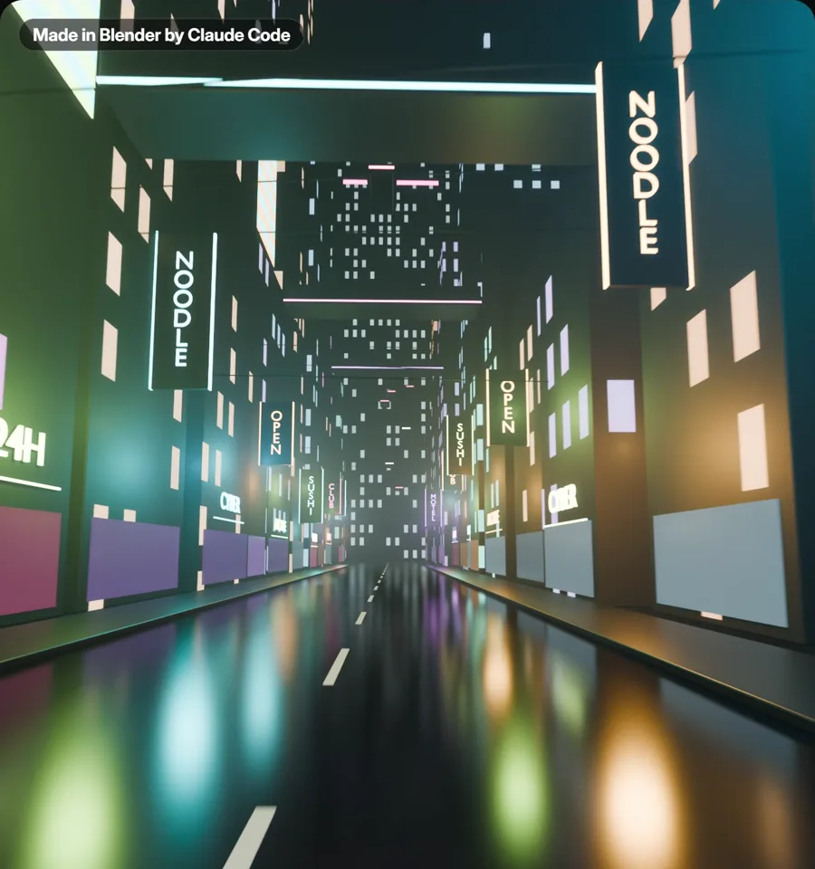
Allen Anant Thomas · 教程 · 相邻接线
逐步把 Claude Code 接到 Blender，并用技能包搭一场小场景。作者只写了 Claude Code，没有写 Fable 或 Opus；文中的 5.2 是 Blender 软件版本。
原发布：页面写 2026-11-08 20:28（亚洲/上海）。
方法与工具（作者自述）：第三方教程页：一步步把 Claude Code 接到 Blender，用技能包搭小场景。作者只写 Claude Code，没写型号；文中的 5.2 是 Blender 版本。
数据：网页教程，没有公开的浏览、点赞或评论数。
社区反馈：找不到公开评论。
推广与利益：站点是一家用 AI 投放广告的营销代理公司，教程同时是获客内容。
上板判断：建议移除。没有可核实的传播和反馈；接线步骤已被更完整的视频教程覆盖。

Chetaslua · 单文件 HTML · 作者称 Fable 5.5
苔藓巨人与森林的动画短片：日出时，长满苔藓的巨人在遗忘的森林里醒来。作者说是纯代码一次做成，但公开仓库里只有一份内嵌 MP4 的 HTML，看不到生成画面的代码。
原发布：2026-11-02 16:19:49（亚洲/上海），X 原帖。
方法与工具（作者自述）：作者原帖写 “Fable 5.5”“PURE CODE”“one shotted”。本轮打开仓库：只有 README 和一份约 48MB 的 index.html，README 写明成片是以 base64 MP4 嵌在页面里，播放器和一层 canvas 颗粒是代码；仓库里看不到生成画面的代码。
数据（2026-11-25 12:53 亚洲/上海 核验）：原帖曝光 2453652，视频播放 667830，赞 8182，回复 373，收藏 5966。
社区反馈（X 回复，2026-11-25 12:55–13:00 亚洲/上海 抽样，不是全量）：多数惊叹；但有人指出“没有 Fable 5.5，只有 5、5.1 和 5.2”，也有人问能否从 GitHub 代码确认，或嘲讽为了省视频费烧更多 token。
推广与利益：原帖 paid_partnership 为 false。
此前核对的限度（仍有效）：
作者原帖和仓库写 Made with Fable 5.5。2026-11-18 核对的官方型号表没有 Claude Fable 5.5，不能改记成 Fable 5.2，也不能当成已核实的官方型号。
上板判断：建议移除。型号不是官方型号，“纯代码”也无法从公开文件里核实；卡上原来写的“学习用代码组织绘画质感、场景和镜头”没有依据，已删去。
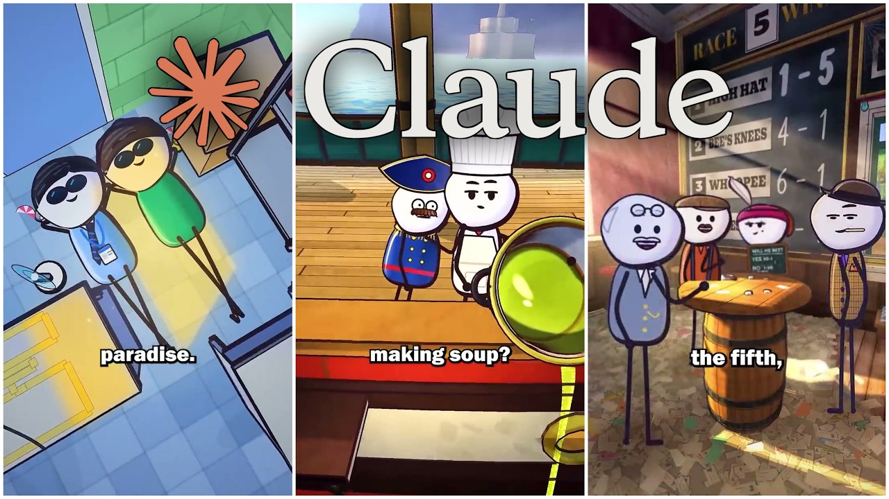
Mr omi · 教程
用 Claude 和 Three.js 在本地做动画短片，不靠视频生成模型。Claude，具体版本未披露。未看视频。
原发布：2026-11-01 14:15:41（亚洲/上海），YouTube 上传时间。
方法与工具（作者自述）：作者简介：让 Claude 逐帧看一个频道最新 20 条短片，写风格手册，再在自己电脑上用 three.js 做 2D 角色、3D 世界的短片，没有视频生成器；第一版显得廉价，于是用 7 个代理逐项对照参考（描线、镜头模糊、运镜、阴影颜色）。技能免费公开。Claude 型号没有写。
数据（2026-11-25 12:54 亚洲/上海 核验）：播放 1374773，赞 32314，抓到评论 60 条。
社区反馈（YouTube 评论，2026-11-25 12:54 亚洲/上海 抽样，不是全量）：最高赞评论（2500 赞）感谢他免费公开；但也有 719 赞的 “The slop thickens.”，还有人说仓库缺 package.json、零基础跑不起来，或说是“烧 500 美元想赚 5 美元”。
推广与利益：另推付费 Skool 社区（更多技能和写实 3D）。
上板判断：达标。一百三十多万播放、三万赞，流程和技能都公开；反馈正面为主，也有明确的 slop 批评。

Ayushman Dash · Claude Opus 5.5 · 补充遗漏
补充近 30 天里漏掉的一条，不是最近三天的新作。日期只精确到 2026-10-28。作者写这是给 Jus Mundi 做的说明片：一个约 326KB 的 HTML，用时间函数和 three.js 出画，再用 Playwright 和 ffmpeg 导出。旁白和音乐来自 ElevenLabs。博客里放了作者的 720p MP4。暂未找到可公开打开的原 HTML 演示。
原发布：博客只写到 2026-10-28，没有钟点。
方法与工具（作者自述）：作者博客：给 Jus Mundi 做的说明片，一份约 326KB 的 HTML，用时间函数和 three.js 出画，Playwright 和 ffmpeg 导出，旁白和音乐来自 ElevenLabs；作者自报 Claude Opus 5.5、约 5 分 35 秒、65 个场景。
数据：博客文章和 MP4，没有公开的浏览、点赞或评论数。
社区反馈：找不到公开评论。
推广与利益：这是作者给客户 Jus Mundi 做的商业片。博客是作者个人站，同时推他的免费 AI 课程。
此前核对的限度（仍有效）：
作者说成片约 5 分 35 秒、65 个场景。本板没有看片，不把这句话写成已审结论。点图打开的是博客里的成片地址。
上板判断：建议移除。没有可核实的传播和社区反馈。如果你看重“真实客户片”这一点，可以保留为参考。

mrdoob · three.js · 后续提交署名 Claude Opus 5.5
打开网页时，曼哈顿的街道、立面和车流在浏览器里现场生成，不靠提前存好的照片。作者原帖写的是压缩后约 784KB，代码以 MIT 开源。首发版用的模型没有披露；2026-11-02 起的后续提交署名 Claude Opus 5.5。
原发布：2026-10-22 15:55:23（亚洲/上海），X 原帖。
方法与工具（作者自述）：作者原帖只说“花了好几周的 token”做出完全程序化的纽约，压缩后 784KB，代码开源，没有写模型。本轮看仓库提交：首发前的 22 个提交没有署名模型；从 2026-11-02 起有 50 个提交写着 Co-Authored-By: Claude Opus 5.5。所以首发版用的模型未披露，之后的改进确实有 Claude Opus 5.5 参与。
数据（2026-11-25 12:53 亚洲/上海 核验）：原帖曝光 374269，视频播放 155529，赞 4054，转发 331，回复 271，收藏 2608。
社区反馈（X 回复，2026-11-25 12:55–13:00 亚洲/上海 抽样，不是全量）：非常正面，而且有实际行动：作者说 4 天里出现了 35 个以上基于它的项目，很多人移植到自己的城市；也有人报告出租车穿过路灯、偶尔卡顿。
推广与利益：原帖 paid_partnership 为 false。MIT 许可。
上板判断：达标。三十七万曝光、大量二创，后续开发有 Claude 署名。

Chase AI · 教程
用 Claude Code 写 JavaScript 逐帧画完，再用 Playwright 和 FFmpeg 拼成视频。Claude，具体版本未披露。未看视频。
原发布：2026-10-07 01:00:09（亚洲/上海），YouTube 上传时间。
方法与工具（作者自述）：作者简介：Claude Code 写 JavaScript 逐帧画，用 Playwright 渲染、FFmpeg 拼成 MP4，不用 After Effects、Remotion 或视频生成器；讲提示、工具循环、参考图和技能四级。Claude 型号没有写。
数据（2026-11-25 12:54 亚洲/上海 核验）：播放 234281，赞 3946，抓到评论 60 条。
社区反馈（YouTube 评论，2026-11-25 12:54 亚洲/上海 抽样，不是全量）：正面为主；也有人说 5.9 万行代码太浪费，用 Remotion 更省 token，标题里的“免费”言过其实（还要 Claude 订阅），还有人担心“讲解类 slop”泛滥。
推广与利益：简介和置顶评论推作者的付费 Skool 课程和一对一咨询。
上板判断：达标。二十多万播放、近四千赞，技能公开。
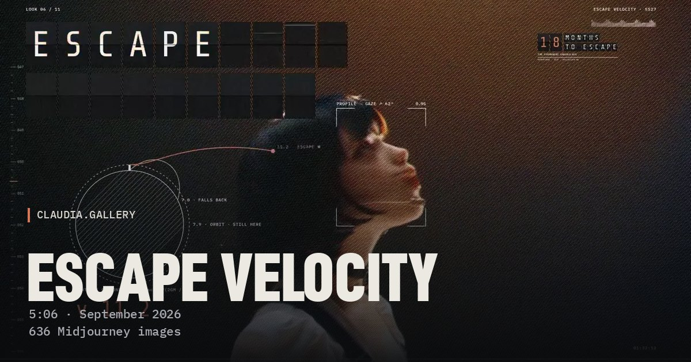
案例 · 作者档案
anabology · Claude Code · Opus 5.5
一支 5 分 06 秒的 MV。人负责方向、选歌和选角、批准分镜、看剪辑并给修改，最后点头。Claude Code 里主要是 Opus 5.5，做调研、歌词、分镜、提示词整理，并协调各段和运动图形的代码。歌是 Suno v6，底板是 Midjourney v8.2，活动和对口型是 Seedance 2.5，用画面底板加上真实人声切片。
Midjourney 提示词 Seedance 提示词 Suno 记录
原发布：2026-09-26 01:17:57（亚洲/上海），X 原帖。
方法与工具（作者自述）：以作者制作档案为准：Claude Code 里主要是 Opus 5.5 做调研、歌词、分镜和提示词整理，并协调各段和运动图形代码；Suno v6 出歌，Midjourney v8.2 出底板，Seedance 2.5 做动态和对口型。人负责方向、选歌选角、批准分镜、看剪辑给意见。
数据（2026-11-25 12:53 亚洲/上海 核验）：原帖曝光 20251448，视频播放 3365314，赞 16511，转发 2016，引用 913，回复 1044，收藏 13921。
社区反馈：沿用 2026-11-19 的抽样：有人想试、受启发，也有人追问视频模型，或担心这是 AI 宣传。本轮没有重新抽样。
推广与利益：原帖 paid_partnership 为 false。原帖那句“12 hours later, woke up”是套用别人的过夜说法。
此前核对的限度（仍有效）：
值得学的是：先有逐词、逐拍的时间网格，生成的画面和代码画的字、图形是分开的，中间有人看片的关口。不是一条提示词自动做完。
分工和数量都来自作者的制作档案，不是本板复跑的结果。档案写 9 章、141 镜；Midjourney 188 条提示词、636 张图、130 块底板；Seedance 47 条镜头加 30 条续拍。墙钟约 19 小时，导演意见约 50 条，都是作者自报。原帖那句 “12 hours later, woke up” 是套用别人的过夜说法，不当成精确工时。
开头大约 25 分钟用过 Fable 5.1，网页搜索辅助写的是 Haiku 4.5。本机还做了分轨、词级对齐和对口型备援。运动图形是自制 JS 引擎，制作页没有给出完整引擎源码，这里也不补。Claudia Grok Bot 是后来的入口，不是这部片子的制作引擎。
未看完正片，未复跑。制作说明以作者档案为准。
上板判断：达标。两千万曝光，制作档案完整，人和工具的分工写得最清楚。
OpenAI 学习板
20 张。12 张是独立创作者的作品，8 张是官方 Showcase 或官方发布。按原发布日期从新到旧；其中 5 张官方作品本轮找到了作者在 X 的首发帖，按那个时间排，另外 2 张找不到日期，排在最后。2026-11-25 全板复核：每张卡的「依据与限度」写了原发布时间、作者自述的方法、当天数据、社区反馈抽样、推广与利益关系，以及上板判断。2026-11-25 新一轮按同一标准新增，见「查看本轮新增」。
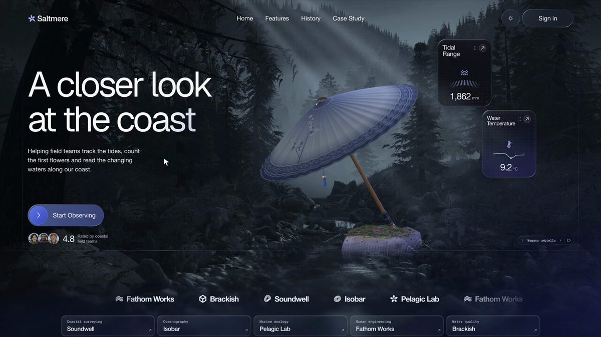
独立创作者 · GPT-6.2 Astra · 作者自述
Meng To · @MengTo
一个可以在网页上逛的沿海观测站：雾林、油纸伞、浑仪和开花的树枝做主视觉，往下是功能卡、案例、立体地形和海面大字。作者把交互拆成四个可复用的技能并开源。值得学的是先定世界，再把世界拆成几个“可以摸的物件”。
原发布：2026-11-24 15:12:11（亚洲/上海），X 原帖。
方法与工具（作者自述）：作者原帖写 “Astra 6.2”（官方名 GPT-6.2 Astra）：用了五天，说它最快、三维品味最好，但需要更多纠偏，所以把做法写成了技能。四个技能以 MIT 开源在 MengTo/Skills：粒子溶解、三维功能小物件、互动地形、边框手电。作者拿 Opus 5.5（很好但慢）和 Fable 5.2（不如 Astra 省 token）做过比较，没说这两个参与了这一页。
数据（2026-11-25 12:53 亚洲/上海 核验）：原帖曝光 87445，视频播放 36151，赞 890，转发 76，引用 8，回复 57，收藏 1018。Greg Brockman 引用转发说 Astra 做 3D 很强。
社区反馈（X 回复，2026-11-25 12:55–13:00 亚洲/上海 抽样，不是全量）：回复整体正面，有人专门夸粒子溶解技能保留原网格的细节；也有人反映加载约 10 秒、会卡，作者回应自己测下来不到 8 秒、不到 8MB。
推广与利益：这一页本身是作者 ThreeUI 的付费 Pro 模板（源码 299 美元买断或 199 美元一年），免费公开的是演示和四个技能。布局参考了 Hey Detya。
此前核对的限度（仍有效）：
“五天”指他用这个模型五天，不是说这一页只做了五天。没有公开完整提示词或逐步教程，也没说是在 ChatGPT、Codex 还是 Cursor 里做的。本板没有复跑。
上板判断：达标。近九万曝光、千余收藏，技能可以直接拿来用，适合做作品官网或项目页。
OpenAI 官方 · GPT-6.2 Astra + Blender
OpenAI Developers · @OpenAIDevs
看起来像 1915 年旧金山世博会（巴拿马太平洋万国博览会）的黑白新闻片：穹顶展馆、尖塔、颗粒和划痕。官方说整段是在 Blender 里做的。值得学的是“伪资料片”的做法：先用三维搭出历史建筑，再在调色和颗粒上做旧。
原发布：2026-11-24 03:12:37（亚洲/上海），OpenAI 开发者账号的 X 原帖。
方法与工具（作者自述）：原帖说：GPT-6.2 能理解世界、模拟事物如何运作、帮你造自己的世界；这段看着像 1915 年世博会的胶片，但“整个是在 Blender 里做的”。视频封面字幕写 “Recreating the 1915 World’s Fair with GPT-6.2 Astra”。没有公开提示词、步骤、用时或参与的人。同一串里还列了 3D 建模、绑定、游戏、姿态估计、机器人仿真等例子，每条一个链接。
数据（2026-11-25 13:58 亚洲/上海 核验）：原帖曝光 187332，视频播放 68533，赞 2315，转发 156，引用 38，回复 106，收藏 597。
社区反馈（X 回复，2026-11-25 13:56–13:57 亚洲/上海 抽样，不是全量）：有人说在 Blender 里伪造 1915 年胶片“很狠”，想走进去逛。最有用的一条批评是镜头：静帧的颗粒和泛黄很像，但运动是现代 24 帧的顺滑，推近园艺馆像用了稳定器；1915 年是手摇摄影机，偏快、会晃，问虚拟摄影机能不能做出手摇速度和片门抖动。也有人借楼抱怨 Astra 6.2 难沟通，或问有没有教程。
推广与利益：OpenAI 官方账号的产品宣传，不是独立创作者。
本轮核对的限度：
官方没说做了多久、人工改了多少、用的什么渲染器。本板没有复跑。
上板判断：达标。18.7 万曝光、两千多赞。这是官方宣传片，按官方 Showcase 记。学的是做旧和镜头语言，再加上评论里那条“手摇速度”的批评。
独立创作者 · Fable 5.2 + Astra 6.2 · 作者自述
サリーのAI無茶ぶり · @Otameshi_BOX · YouTube
不会 3D 的作者只给 Claude Fable 5.2 和 Codex 里的 Astra 6.2 下指令，七天、147 次重做，做出一个能动的 3D VTuber 和一支 MV，额外账单超过 15 万日元。值得学的是作者把做不到的也演出来（比如鼓掌），最后拿收据和刷卡明细重新算一遍成本。
原发布：2026-11-22 20:07:40（亚洲/上海），YouTube 上传时间。
方法与工具（作者自述）：简介：用 Claude Fable 5.2 和 Codex Astra 6.2 下指令做 3D VTuber，7 天、147 次重做；身体的 3D 生成用 Tripo。章节有“能不能动”“做不到的”“做法”“算账”和完整 MV。简介没写两个模型各自负责哪一部分。
数据（2026-11-25 13:55 亚洲/上海 核验）：播放 95507，赞 1462，抓到评论 60 条。频道只有 1140 订阅，这一条是爆款。
社区反馈（YouTube 评论，2026-11-25 13:55 亚洲/上海 抽样，不是全量）：正面为主，讨论集中在成本：有人说外包至少要百万日元，15 万很便宜；有人建议做完后让 Fable 和 Astra 回顾聊天记录、总结卡在哪，第二次就能省钱；有人算了订阅套餐的省钱方案。也有人担心 3D 建模师和创作者的工作会消失；有人照着做，说“只是下指令也很难”。
推广与利益：简介没有推广码，只给了 Tripo 的普通链接。
本轮核对的限度：
放在 OpenAI 板是因为用了 Astra 6.2，但 Claude Fable 5.2 也是主力，两边各干了什么没写清。“15 万日元”是作者自报，本板没看到收据。本板没有复跑。
上板判断：达标。9.5 万播放、近一千五百赞，难得把失败和账单都摆出来。
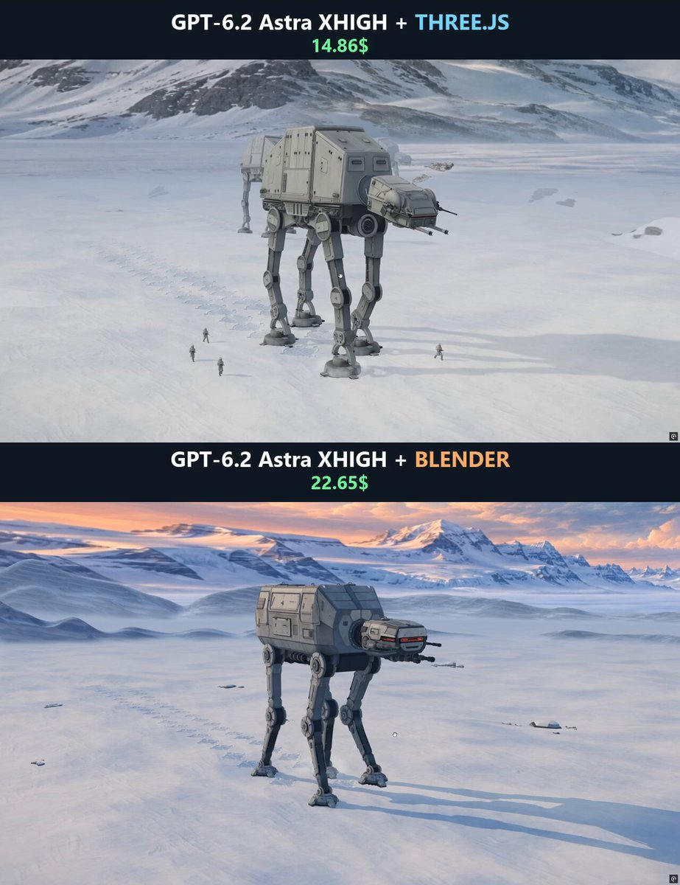
独立创作者 · GPT-6.2 Astra · 作者自述
Vib3Coded · @vib3coded
同一个提示词，让 GPT-6.2 Astra（XHigh）分别用 Three.js 和 Blender 做一台在雪原上行走的 AT-AT。Three.js 版 48 分钟、14.86 美元；Blender 版 2 小时 15 分、22.65 美元。值得学的是怎么选工具：只要一个镜头、在网页里看，Three.js 更快；要改模型、绑定、复用到更多镜头，Blender 更合适。
原发布：2026-11-22 10:23:31（亚洲/上海），X 原帖。
方法与工具（作者自述）：原帖：同一任务，都用 GPT-6.2 Astra XHigh；Three.js 48 分钟、14.86 美元，Blender 2 小时 15 分、22.65 美元。作者紧接着在回复里贴了提示词（Three.js r160、单个 HTML、WebGL 2）。作者回复说两段都是 Astra；要导出的话建议导成 GLB，骨骼能带走，JS 驱动的动画要先烘焙，他自己还没试；如果要给同一台步行机拍十个镜头，他会用 Blender。
数据（2026-11-25 13:58 亚洲/上海 核验）：原帖曝光 67045，视频播放 33683，赞 792，转发 62，引用 9，回复 92，收藏 546。提示词那条回复曝光 4424，赞 62，收藏 99。
社区反馈（X 回复，2026-11-25 13:56–13:57 亚洲/上海 抽样，不是全量）：多数在讨论工具怎么选，不只是夸：有人说 Blender 才有真正的绑定和导出；有人说 Blender 要经过 MCP 和 Python 接口多绕一层，但人更容易在 Blender 里接手做创作决定；有人建议再测“改步态、改一个机位”的交接成本。有人用作者的提示词复现成功，也有人拿 Opus 5.5 跑同一提示词对比；还有人指出 Astra 做的腿经常关节反向弯。
推广与利益：没有推广链接。作者简介写“这里的东西都是 vibe coding 做的”。板上另一张 pixel-jet-game 也是这位作者。
本轮核对的限度：
只跑了一次，时间和花费是作者自报。Blender 版用的渲染器没说（有人问 Cycles 还是 Eevee，抽样里没看到回答）。AT-AT 是《星球大战》的形象，这是同人练习，不能商用。本板没有复跑。
上板判断：达标。6.7 万曝光、提示词公开，回复里关于工具选择的争论本身就是学习材料。
OpenAI 官方 Showcase · GPT-6.2 Astra + Codex
Thomas Ricouard · OpenAI
同一条空间路径上有三种画面：写实黄昏、绘本和半透明色叶。切换时位置和朝向还在。页眉写 GPT-6.2 Astra + Codex。技术是 JavaScript、Three.js、WebGL 2、Blender 和 Web Audio。篝火的声音跟着空间走。不是三张重复的卡，也不是审片。
原发布：2026-11-18 22:48:09（亚洲/上海），作者 Thomas Ricouard（@Dimillian）的 X 首发帖；官方 Showcase 页没有日期。
方法与工具（作者自述）：作者原帖：测试 GPT-6.2 Astra 对画风的理解，同一片森林做写实、绘本、“liquid glass”三种风格。官方页写 Three.js、WebGL 2、Blender 和 Web Audio。
数据（2026-11-25 13:06 亚洲/上海 核验）：作者首发帖曝光 11093，视频播放 4265，赞 173，回复 9。
社区反馈：回复太少，未抽样。
推广与利益：作者 X 简介写在 OpenAI 做 Codex 开发者体验，这是官方展示。
此前核对的限度（仍有效）：
官方制作过程未独立复跑。暂未找到公开源码。未试玩。
上板判断：建议移除。曝光一万出头，达不到传播门槛。“同一空间切三种画风”对美术指导有用，所以如果你想保留官方案例，可以留。
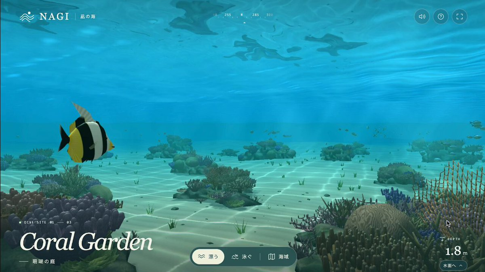
独立创作者 · 社区
マシモGPT · @Masimo_Blue
作者称用 GPT-6.2 Astra 做了一个能在海里游、还能戳鱼的网页。可玩页的名字是「凪 NAGI · 珊瑚礁の浅瀬」。值得学的是把水下场景做成能上手的现场，而不是只放一段片子。
原发布：2026-11-18 08:18:13（亚洲/上海），X 原帖。
方法与工具（作者自述）：作者原帖：用 GPT-6.2 Astra 做了能在海里游、能戳鱼的网页；帖里视频是用来做基准的初期版本，现在网页上的鱼已换成 @nachat_dayo 的鱿鱼和用套件做的鱼。
数据（2026-11-25 12:53 亚洲/上海 核验）：原帖曝光 5579，视频播放 1278，赞 87，回复 1，收藏 18。
社区反馈（X 回复，2026-11-25 12:55–13:00 亚洲/上海 抽样，不是全量）：只有两条回复，一条是作者自己。谈不上社区反馈。
推广与利益：原帖 paid_partnership 为 false。
此前核对的限度（仍有效）：
原帖原文：GPT-6.2 Astraで、海の中を泳ぐWebサイトを作りました。作者写明帖里的视频是初期版本；现在可玩页上的鱼已经换成 @nachat_dayo 的鱿鱼，以及其他用套件做的鱼，不是全部一次生成。作者没有写具体前端引擎。暂未找到源码。未试玩，未看完视频。
上板判断：建议移除。曝光不到六千，达不到传播门槛。这批社区卡是按你“独立创作者的 Astra 实验”偏好收的，所以列出来请你决定。
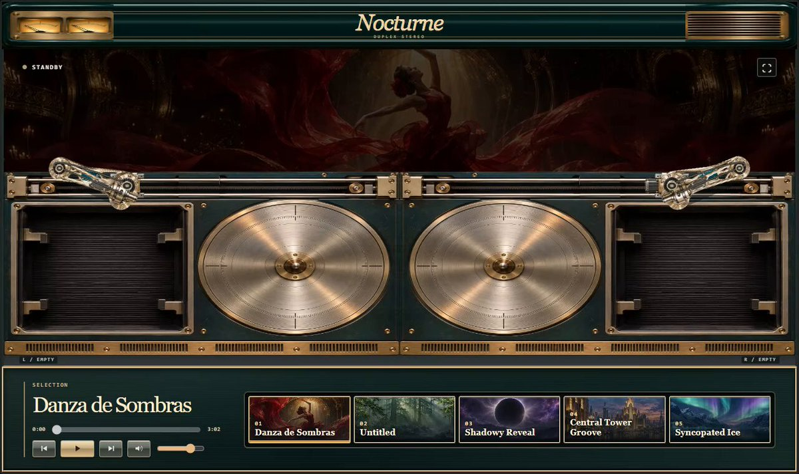
独立创作者 · 社区
ShadeLurk · @ShadeLurk
作者称用 GPT-6.2 Astra 做了浏览器里的 CD 点唱机：选曲后机械臂取碟，两台唱机接歌。页面标题是 Nocturne — Optical Jukebox。值得学的是把取碟、接歌、声音和画面收进同一份 HTML。
原发布：2026-11-18 07:16:45（亚洲/上海），X 原帖。
方法与工具（作者自述）：作者原帖：用 GPT-6.2 Astra 做浏览器里的 CD 点唱机；源码公开在回复里，说其他模型也能拿这份 HTML 换成自己的歌。
数据（2026-11-25 12:53 亚洲/上海 核验）：原帖曝光 2283，视频播放 786，赞 92，回复 3。HTML 回复曝光 424。
社区反馈（X 回复，2026-11-25 12:55–13:00 亚洲/上海 抽样，不是全量）：几条回复都友好（夸品味），样本太少。
推广与利益：原帖 paid_partnership 为 false。
此前核对的限度（仍有效）：
作者长文写声音和画面用 Web Audio 与 Canvas／WebGL，五首歌打进同一个 HTML。回复里的地址和可玩页是同一份。这是公开可查看的 HTML，不是可随便商用的许可。暂未找到另外的仓库。未试玩，未看完视频。日期用原帖时间，不用页面的 Last-Modified。
上板判断：建议移除。曝光两千多，达不到传播门槛。
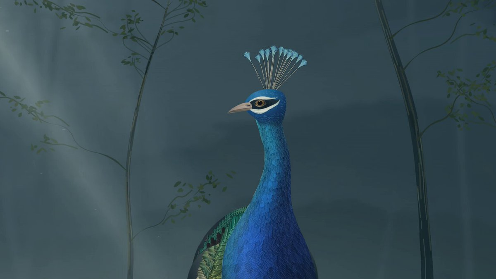
独立创作者 · 社区
Peter Gostev · @petergostev
作者称这是他最喜欢的一次 GPT-6.2-Astra 生成：一只用 SVG 画的孔雀。值得学的是用矢量而不是常见的三维网格去表现一只活的动物。这是单次作品，不是一套可玩项目。
原发布：2026-11-18 06:18:19（亚洲/上海），X 原帖。
方法与工具（作者自述）：作者原帖：他最喜欢的一次 GPT-6.2-Astra 生成，SVG 画的孔雀，说没有别的模型（包括 Fable）接近这个精度。没有公开 SVG 文件或提示词。
数据（2026-11-25 12:53 亚洲/上海 核验）：原帖曝光 87702，视频播放 48797，赞 1622，回复 63，收藏 324。
社区反馈（X 回复，2026-11-25 12:55–13:00 亚洲/上海 抽样，不是全量）：多数惊叹羽毛细节，有人说“所有 Astra 对比里只有这条让我服气”；也有人提醒 SVG 里可能嵌位图、要放大看，或要求公开提示词。
推广与利益：原帖 paid_partnership 为 false。
此前核对的限度（仍有效）：
原帖写 GPT-6.2-Astra，并拿包括 Fable 在内的其他模型作比较。只展示这一件。暂未找到可打开的 SVG 文件或教程。未看完视频。
上板判断：达标。近九万曝光、正面反馈；但只是一张单次生成，方法学习价值有限。
独立创作者 · 社区 · GPT-6.2 Astra
Givros · @givros
作者命名的可探索山村。他写用 Blender、three.js 和自制环境技能来做。可玩页能走、能看鸟瞰。值得学的是地形、房子和探索放在同一条制作链上，而不是只交一张静帧。
原发布：2026-11-18 06:17:01（亚洲/上海），X 原帖。
方法与工具（作者自述）：作者原帖写 “GPT 6.2 Astra Ultra”（Ultra 不是官方型号名）：用 Blender、three.js 和自制技能做；回复里贴了让 ChatGPT 优化过的长提示词。后来的帖子写 “GPT 6.2 Astra”，自报 1 小时 53 分。
数据（2026-11-25 12:53 亚洲/上海 核验）：原帖曝光 85942，视频播放 40558，赞 1053，回复 38，收藏 677。提示词回复曝光 6098，收藏 105。
社区反馈（X 回复，2026-11-25 12:55–13:00 亚洲/上海 抽样，不是全量）：抽样正面为主，有人说靠的是“告诉模型不要做什么”；也有人说“不太好看”，或打开很慢。
推广与利益：原帖 paid_partnership 为 false。可玩页写地形影像改编自日本国土地理院。
此前核对的限度（仍有效）：
首帖原文写 “GPT 6.2 Astra Ultra”。Ultra 不是官方型号名，也不是官方 reasoning.effort 的取值。作者后来的帖子写 “GPT 6.2 Astra”，并自报 1 小时 53 分。徽章用官方名称 GPT-6.2 Astra。可玩页写地形影像改编自日本地理院。自制技能没有找到独立发布页。未试玩，未看完工作流视频。
上板判断：达标。八万多曝光、正面反馈，提示词公开，Blender 加 three.js 的分工可学。
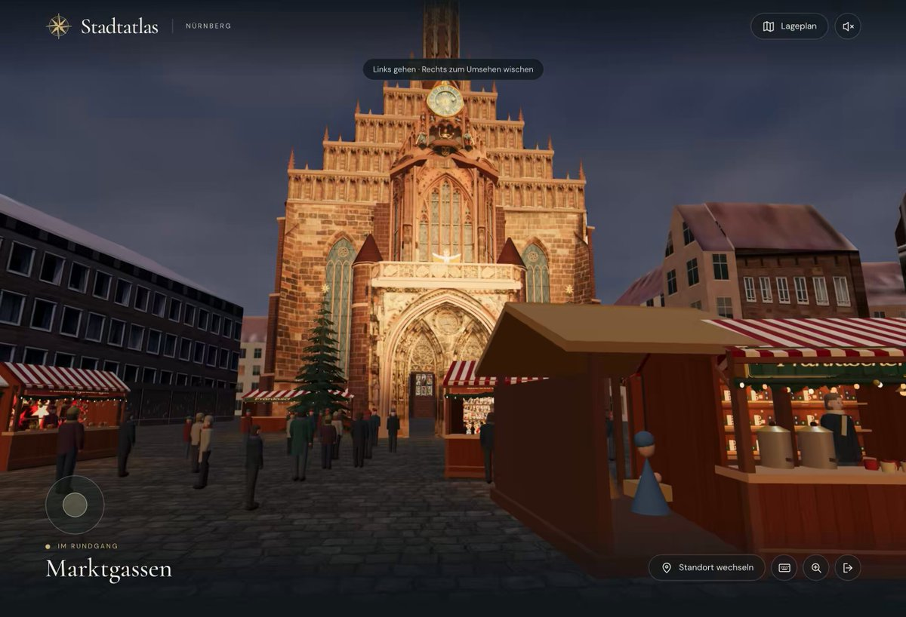
独立创作者 · 社区
Florian Gallwitz · @FlorianGallwitz
作者称用和半年前完全相同的提示词，让 GPT-6.2 Astra 再做一遍可走进去的圣诞市场，并觉得比旧版更真实。值得学的是同一条提示词换模型之后，空间还能不能走。
原发布：2026-11-18 05:32:53（亚洲/上海），X 原帖。
方法与工具（作者自述）：作者原帖：和半年前一字不差的提示词，换 GPT-6.2 Astra 再做一次可走的纽伦堡圣诞市场，结果更真实。旧帖写的是 ChatGPT-5.5 Pro。
数据（2026-11-25 12:53 亚洲/上海 核验）：原帖曝光 6166，视频播放 3414，赞 109，回复 10。2026-05-01 旧帖曝光 9244，赞 55。
社区反馈（X 回复，2026-11-25 12:55–13:00 亚洲/上海 抽样，不是全量）：德语回复友好，高赞回复在开玩笑说“没有路障和保安，不像真的圣诞市场”。
推广与利益：原帖 paid_partnership 为 false。
此前核对的限度（仍有效）：
旧帖当时写的是 ChatGPT-5.5 Pro。这次没有写引擎，也没有可玩地址。未看完视频。
上板判断：建议移除。曝光六千，达不到传播门槛。“同一提示词换模型”的对照思路有价值，但这条数据太小。
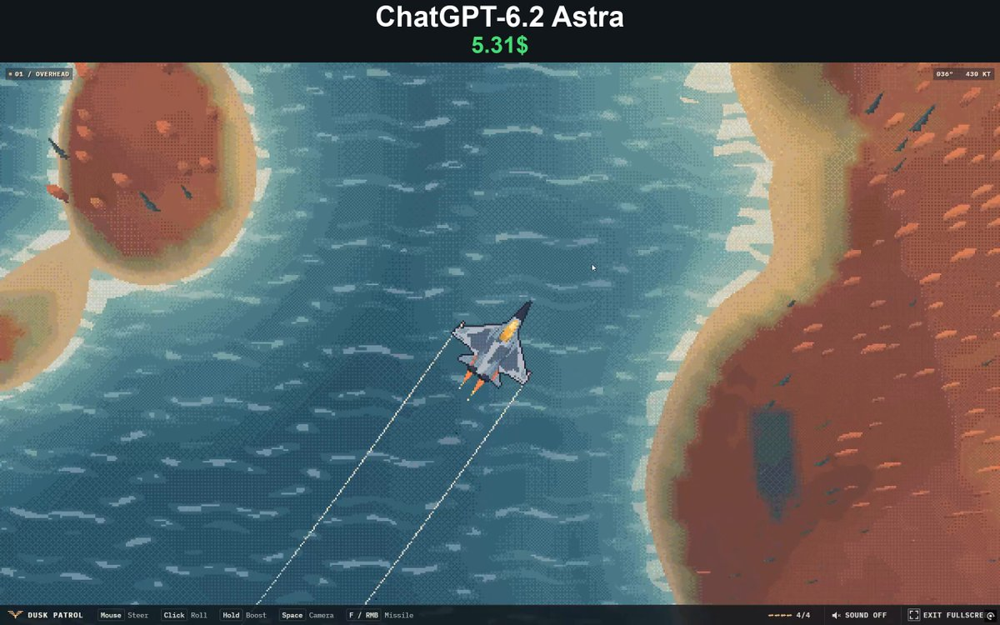
独立创作者 · 社区
Vib3Coded · @vib3coded
作者称 GPT-6.2 Astra 在一个 HTML 文件里做出能开加力、滚转、切座舱和发射的像素飞机。值得学的是飞行、视角和武器收在同一份文件里。36 分钟和 5.31 美元是作者自己说的。
原发布：2026-11-18 05:13:18（亚洲/上海），X 原帖。
方法与工具（作者自述）：作者原帖：GPT-6.2 Astra 用 36 分钟、5.31 美元，在一个 HTML 文件里做出像素喷气机游戏：加力、湖面滚转、座舱视角、导弹。没有公开文件或提示词。
数据（2026-11-25 12:53 亚洲/上海 核验）：原帖曝光 161119，视频播放 88392，赞 870，回复 74，收藏 525。
社区反馈（X 回复，2026-11-25 12:55–13:00 亚洲/上海 抽样，不是全量）：正面为主，很多人在说价格和时间；也有人说这是原型或演示，不算一个游戏，或质疑改一处会不会弄坏另一处。
推广与利益：原帖 paid_partnership 为 false。
此前核对的限度（仍有效）：
暂未找到可下载的 HTML 或可玩页。未看完视频。
上板判断：达标。十六万曝光、正面反馈；但没有公开文件，能学的主要是“单文件装下整套玩法”。
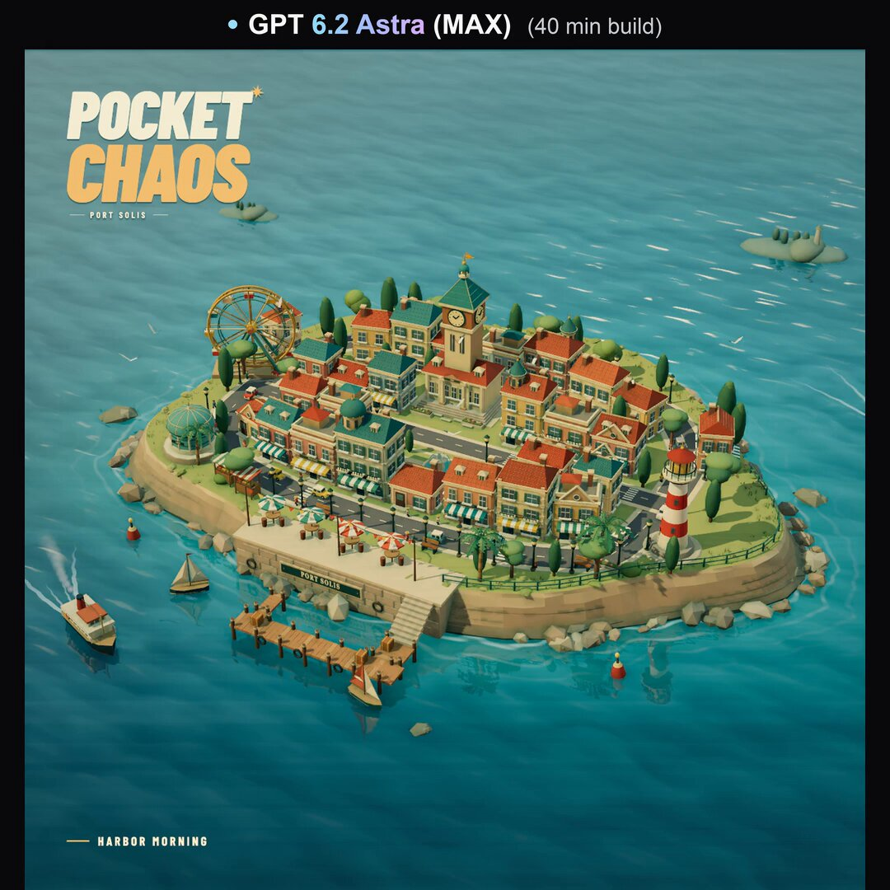
独立创作者 · 社区
루샨 · @lucian__03
作者称只写了一次提示词，让 GPT-6.2 Astra 做龙卷风、陨石、内涝和建筑破坏修复。值得学的是把几种灾害放进同一座城。封面上方的 MAX 是作者写的推理力度，不是官方型号 Astra Max。
原发布：2026-11-18 03:13:04（亚洲/上海），X 原帖。
方法与工具（作者自述）：作者原帖：只写了一次提示词，让 GPT-6.2 Astra 做龙卷风、陨石、内涝、建筑破坏和修复；Max effort，约 40 分钟。
数据（2026-11-25 12:53 亚洲/上海 核验）：原帖曝光 3642，视频播放 1494，赞 68，回复 14。
社区反馈（X 回复，2026-11-25 12:55–13:00 亚洲/上海 抽样，不是全量）：韩语回复正面（像模拟城市、质量比想象好），样本小。
推广与利益：原帖 paid_partnership 为 false。
此前核对的限度（仍有效）：
Max 是官方文档里 reasoning.effort 的一个取值。作者自报约 40 分钟一次做完。暂未找到可玩页或源码。未看完视频。同一作者另有 Sol 的作品，不并进这张卡。
上板判断：建议移除。曝光不到四千，达不到传播门槛。
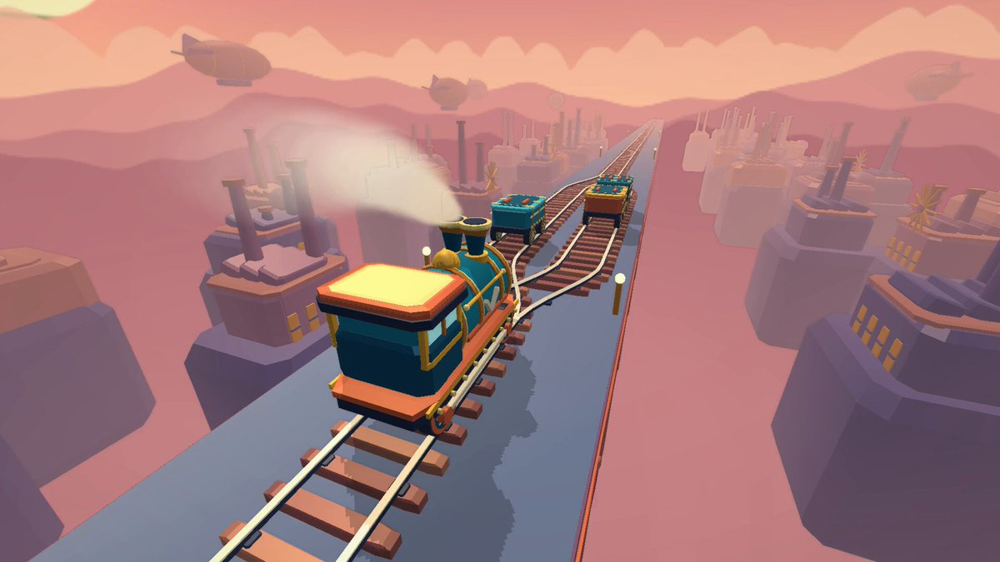
独立创作者 · 社区
soyukke · @soyukke_game
作者没有给正式片名。他写这是 GPT-6.2 Astra xhigh，而且用的是同一条提示词。值得学的是同一条提示词从 Fable 5.2 换到 Astra 之后，天空和火车会变成什么样。这不是一套新设定。
原发布：2026-11-18 03:03:15（亚洲/上海），X 原帖。
方法与工具（作者自述）：作者原帖：GPT-6.2 Astra xhigh，“同一条提示词……”，拿来对比他 11-10 用 Fable 5.2 从建模做到视频的那条。
数据（2026-11-25 12:53 亚洲/上海 核验）：原帖曝光 548137，视频播放 238011，赞 2034，回复 47，收藏 860。
社区反馈（X 回复，2026-11-25 12:55–13:00 亚洲/上海 抽样，不是全量）：传播大，但回复几乎都在笑 Astra 这版：“输了吧”“Codex 没品味”“少了 Fable 那版的镜头冲击力”，还有人调侃机器人对车尾的动作。
推广与利益：原帖 paid_partnership 为 false。
此前核对的限度（仍有效）：
旧帖写的是让 Fable 5.2 从建模做到视频。xhigh 按作者用词记下，是推理力度的说法。暂未找到可玩页。未看完视频。
上板判断：建议移除。大家认可的是这条对比的笑点，不是这件作品；它更像 Fable 那条的反例。建议移除，或者改成“同一提示词对照”的说明，由你决定。
OpenAI 官方 Showcase · GPT-6.2 Astra
Eric Provencher · OpenAI
页眉写 GPT-6.2 Astra。官方页没有写引擎。可走的材质、光线、反射和视觉特效展厅，能走近看灯，有烘焙日光和实时阴影，悬挂物在动，地面有倒影。学的是走动着看材质，不是一条成片。
原发布：2026-11-18 02:20:51（亚洲/上海），作者 Eric Provencher（@pvncher）的 X 首发帖；官方 Showcase 页没有日期。
方法与工具（作者自述）：作者原帖：GPT-6.2 Astra 能做的着色器很惊人，他做了一个叫 Light and Matter 的博物馆来展示其中几种。
数据（2026-11-25 13:06 亚洲/上海 核验）：作者首发帖曝光 12685，赞 196，回复 11，收藏 43。
社区反馈：回复太少，未抽样。
推广与利益：作者 X 简介写在 OpenAI 做 Codex 开发者体验，这是官方展示。
此前核对的限度（仍有效）：
官方制作过程未独立复跑。暂未找到公开源码。未试玩。
上板判断：建议移除。曝光一万出头，达不到传播门槛。
独立创作者 · 社区
Ethan Mollick · @emollick
作者称在发布前就用过 GPT-6.2 Astra，觉得难驾驭；把「用 Blender 和 Unity 从零做一次太空电梯乘坐」交给它时，结果还可以。值得学的是大型装置的尺度和乘坐视角，同时保留他对可控性的保留意见。
原发布：2026-11-18 02:16:10（亚洲/上海），X 原帖。
方法与工具（作者自述）：作者原帖：发布前就用过 GPT-6.2 Astra，觉得很不稳定、比其他模型难驾驭；但交给它一个大项目（用 Blender 和 Unity 从零做一次太空电梯乘坐），它交出来的还不错。
数据（2026-11-25 12:53 亚洲/上海 核验）：原帖曝光 133615，视频播放 68408，赞 1320，回复 149，收藏 277。
社区反馈（X 回复，2026-11-25 12:55–13:00 亚洲/上海 抽样，不是全量）：回复大多认同“不稳定但大项目能交付”，讨论要不要把任务拆小、写验收标准；也有人拿别的模型做了对照。
推广与利益：原帖 paid_partnership 为 false。作者发布前就拿到了模型。
此前核对的限度（仍有效）：
原文写 prior to launch，以及 harder to steer。工具是作者写的 Blender 和 Unity。暂未找到可玩页或源码。未看完视频。同日另一则只写 Astra 6.2 的快艇帖不并进这张卡。
上板判断：达标。十三万曝光，作者自己的保留意见本身就是学习点。
OpenAI 官方 Showcase · GPT-6.2 Astra
Eric Provencher · OpenAI
页眉写 GPT-6.2 Astra，没有写 Codex。官方页没有写引擎，这里也不补 Three.js。三颗弹珠穿过一套连锁机构，镜头和声音按碰撞对齐。官方制作过程从鲁布·戈德堡式演示写起，含提示和分步。
原发布：2026-11-18 02:15:09（亚洲/上海），作者 Eric Provencher（@pvncher）的 X 首发帖；官方 Showcase 页没有日期。
方法与工具（作者自述）：作者原帖：GPT-6.2 Astra 做漂亮的三维画面很强，有参考图引导时更强；演示在桌面浏览器里用 WebGPU 跑。多条回复把它称作 Escapement，原帖链接本轮没有展开核对。官方页没有写引擎。
数据（2026-11-25 13:06 亚洲/上海 核验）：作者首发帖曝光 57114，视频播放 25525，赞 624，回复 35，收藏 156。
社区反馈：本轮没有系统抽样，看到的几条在夸物理和参考图的用法。
推广与利益：作者 X 简介写在 OpenAI 做 Codex 开发者体验，这是官方展示。
此前核对的限度（仍有效）：
那是官方步骤和提示摘要，不是已复跑的公开教程。暂未找到公开源码。未试玩。
上板判断：达标。五万多曝光，官方页有步骤，镜头和声音按碰撞对齐值得学。
OpenAI 官方 Showcase · GPT-6.2 Astra
Thomas Ricouard · OpenAI
官方页写 GPT-6.2 Astra，API 型号是 gpt-6.2-astra。页眉没有 Codex 徽章。正文写 Codex 把 Blender 里的地标放进 Three.js，于是可以在巴黎步行或开车。学的是真实街区、地标和可走可开的尺度，不是视频模型。
原发布：2026-11-18 02:08:53（亚洲/上海），作者 Thomas Ricouard（@Dimillian）的 X 首发帖；官方 Showcase 页没有日期。
方法与工具（作者自述）：作者原帖：他目前最大的演示，用 GPT-6.2 Astra 做的 1:1 巴黎地图，可走可开，有车流、公交、行人、自行车和 50 多个三维地标；是手工资产和程序生成的地形、贴图混合。官方页写 Codex 把 Blender 里的地标放进 Three.js。
数据（2026-11-25 13:06 亚洲/上海 核验）：作者首发帖曝光 69570，视频播放 29562，赞 882，回复 60，收藏 331。
社区反馈：本轮没有抽样首发帖的回复。作者 11-18 自己说这批演示的流量比之前小。
推广与利益：作者 X 简介写在 OpenAI 做 Codex 开发者体验，这是官方展示。
此前核对的限度（仍有效）：
官方页有分步制作过程，含提示摘要，不是已复跑的完整教程，也不是公开源码。暂未找到公开源码。未试玩，未复跑。官方页没有作品日期，本轮改用作者在 X 的首发时间排序。
上板判断：达标。七万曝光，官方页有分步做法，可学真实城市尺度。
OpenAI 官方 Showcase · GPT-6.2 Astra + Codex
Thomas Ricouard · OpenAI
标题用官方拼法 Notre Damn。灵感来自巴黎圣母院中殿，这是官方提示里的说法。页眉写 GPT-6.2 Astra + Codex。技术是 JavaScript、Three.js、WebGL 2 和 Canvas 2D。可走的教堂内部，按时辰看彩窗、反射和尺度。官方正文写地板下还有一台相机，用来画长椅之间的玫瑰窗倒影。
原发布：2026-11-18 01:56:08（亚洲/上海），作者 Thomas Ricouard（@Dimillian）的 X 首发帖；官方 Showcase 页没有日期。
方法与工具（作者自述）：作者原帖：让 GPT-6.2 Astra 研究巴黎圣母院的照片和历史平面图，重建中殿视角。注意他首发帖写的是 “Notre-Dame in Unreal Engine 5”，而官方 Showcase 的网页版写的是 JavaScript、Three.js、WebGL 2。作者补充说它一开始是教堂里的生存射击游戏。
数据（2026-11-25 13:06 亚洲/上海 核验）：作者首发帖曝光 51192，视频播放 20564，赞 781，回复 24，收藏 182。
社区反馈：本轮没有抽样首发帖的回复。有回复专门夸玫瑰窗倒影的渲染难度。
推广与利益：作者 X 简介写在 OpenAI 做 Codex 开发者体验，这是官方展示。
此前核对的限度（仍有效）：
官方制作过程未独立复跑。暂未找到公开源码。未试玩。
上板判断：达标。五万曝光，官方页有做法；UE5 和网页版的差别要分清。
OpenAI 官方 Showcase · GPT-6.2 Astra
Chaow Wu · OpenAI
发布日期待核实
页眉写 GPT-6.2 Astra。技术写的是 Three.js。六个格斗角色。官方制作过程从剪影、毛绒和缝线，到绑定、战斗姿势，再到攻击判定的可视化。学的是角色从外形到骨骼再到可玩判定。
原发布：找不到作者首发帖；官方 Showcase 页没有日期，继续排在最后。
方法与工具（作者自述）：只有官方页：Three.js，六个毛绒格斗角色，从剪影、毛绒和缝线做到绑定、战斗姿势和攻击判定可视化。
数据：官方页没有互动数；X 上只找到一条中文转述（曝光约一千），找不到作者 Chaow Wu 的帖子。
社区反馈：找不到。
推广与利益：OpenAI 官方展示。
此前核对的限度（仍有效）：
官方步骤未独立复跑。暂未找到公开源码。未试玩。
上板判断：无法核实。没有可核实的传播和反馈。
OpenAI 官方 Showcase · GPT-6.2 Astra + Codex
Katia Gil Guzman · OpenAI
发布日期待核实
页眉写 GPT-6.2 Astra + Codex。技术是 JavaScript、Three.js 和 WebGL。可布置的三维玻璃花园：拖植物、苔藓和石头，调光的方向，看物体落下和阴影对齐，再导出高清图。学的是布置工具，不是一条做完的影片。
原发布：找不到这个作品的作者首发帖；官方 Showcase 页没有日期，继续排在最后。
方法与工具（作者自述）：只有官方页：JavaScript、Three.js、WebGL，可布置的玻璃花园，能拖植物、调光、导出高清图。
数据：官方页没有互动数。作者 Katia Gil Guzman（@kagigz）11-18 只发了一条泛泛夸 Astra 的帖（曝光 1576），没有单独发这个作品。
社区反馈：找不到。
推广与利益：OpenAI 官方展示。
此前核对的限度（仍有效）：
官方制作过程未独立复跑。暂未找到公开源码。未试玩。
上板判断：无法核实。没有可核实的传播和反馈。
高斯泼溅学习板
12 张。这块板收的是以高斯泼溅（3D Gaussian Splatting）为主要手艺的作品和开源工具，不是某一家模型厂商的专板。如果一件作品主要是在演示 Claude 或 OpenAI 的模型，即使也用了泼溅，仍放在对应的厂商板。按原发布日期从新到旧，说明卡不占内容位。这一版在原有 Ink Studio 和 splat-walk 之外新收 10 张；其中 WASCAPE 是 Junie 记得的最近开车应用，未过 X/YouTube 工作门槛，按点名案例收录并标明限度。传播门槛和「依据与限度」写法与另外两块板相同。
开源工具 · 像素风高斯泼溅 · 作者自述
Silicon Jungle · @JungleSilicon
把雕刻好的立体直接烧成能转、能动、还能打碎的像素风高斯泼溅，场景用 JavaScript 或 JSON 写。值得学的是：把“像像素画”做成渲染本身，而不是事后套一层滤镜。
原发布：2026-11-16 16:27:09（亚洲/上海），X 原帖。43 秒后的回复给出 GitHub 地址。仓库建立于当日 15:44（亚洲/上海）。
方法与工具（作者自述）：原帖写：老有人问这些三维像素风高斯泼溅是怎么做的，现在可以用 Ink Studio，GitHub 上免费；带完整动画套件、几何节点、雕刻、体积、会记住状态的世界效果、粒子、物理和破坏。仓库 README 写：用 JavaScript 工具包雕刻有符号距离体，再烘焙成像素风高斯泼溅，可在 Node、命令行或浏览器里用；浏览器默认是自研 WebGL 2 渲染器，没有声明运行时依赖。有人问是否用了 three.js；同线程里的说明指出 package.json 没有 three.js 依赖。后续展示帖分别写过 “made with Astra 6.2”“Fable 5.2”“sol 6.2”，开源声明本身没有绑定某一家模型。
数据（2026-11-27 14:42 亚洲/上海 核验）：原帖曝光 80336，视频播放 41332，赞 1457，转发 124，引用 14，回复 57，收藏 1674。仓库回复曝光 20021，赞 281，收藏 495。GitHub 于 14:39 核验为 1312 星、106 个复刻，许可证 MIT。
社区反馈（X 回复，2026-11-27 14:43 亚洲/上海 抽样，不是全量）：抽样回复以称赞为主，有人夸像素格子在物理和破坏时仍然清晰，有人问是否用了 three.js。用关键词在原帖线程里搜索批评性回复，没有找到匹配。之后一次相关讨论里，有人质疑像素后处理还算不算 splat，作者回应“后处理不会改变它是 splat”。中文账号“宋宋”在 11-25 发过转述帖（同日 14:42 核验：曝光 55474，赞 1054），那是转述，不是原作，也不计入本卡门槛。
推广与利益：原帖没有付费合作标记。作者就是这个工具的作者，声明在 GitHub 免费、MIT 开源。包装名是 @shapeshift-labs/ink-studio，package.json 标了 private，README 写这是为了避免被意外发到 npm。本板没有在原帖里看到付费链接。
此前核对的限度（仍有效）：
这是工具包，不是成品短片；要用它还得写场景，或让编程助手去读文档。作者后来的展示用过不同模型名称，其中 “sol 6.2” 不是本板已核对的官方型号名，那些展示帖需单独审核，不并进这一张卡。本板没有复跑。
上板判断：达标。原帖超过八万曝光、一千余赞，主手艺是像素风高斯泼溅工具，适合放在这块板。
开源项目 · PlayCanvas / WebGPU · 作者自述
Will Eastcott · @willeastcott
看起来像有人拿着手机走过伦敦一条窄巷，其实是实时渲染的高斯泼溅。点一下画面，巷子会烧成发光的椭球，再自行拼回来。值得学的是：要骗过眼睛，先模拟“走路的人”和“这台手机”，再谈场景本身。
原发布：2026-11-05 23:31:28（亚洲/上海），X 原帖。仓库同日稍早建立（22:29 亚洲/上海）。
方法与工具（作者自述）：原帖写：“这不是视频。它是实时渲染的高斯泼溅，由一个模拟的人拿着虚拟手机走拍：步态、转头、运动模糊、卷帘快门、脚步声。你可以点一下，把它烧成组成它的高斯椭球。用 PlayCanvas 做的。”线程里接着写：扫描是 David Fletcher 的 “Artillery Passage”（CC BY 4.0），从 SuperSplat 下载；他把 1.18 GB 的 PLY 压成 76 MB 的 SOG，并加了模拟的头和步态、胶片后期，以及逐个 splat 的着色器钩子来做燃烧。源码在 GitHub。仓库 README 把各部分写得更细：走法是时间的纯函数，相机做 1/80 秒曝光和 16 毫秒卷帘快门，声音按脚步落点对齐，用 ElevenLabs 生成，时钟锁在 30 帧。扫描本身是 2024 年 6 月用 Sony a7R III 拍的 1575 张照片，在 RealityScan 和 Lichtfeld Studio 里处理（作者引用 SuperSplat 页面的说明）。PlayCanvas 引擎是 MIT。splat-walk 仓库本身没有 LICENSE 文件，package.json 标了 private、也没写许可证。
数据（2026-11-27 14:34 亚洲/上海 核验）：原帖曝光 259099，视频播放 104714，赞 2213，转发 179，引用 49，回复 37，收藏 1735。GitHub 于 14:35 核验为 71 星、7 个复刻。
社区反馈（X 回复，2026-11-27 14:35–14:37 亚洲/上海 抽样，不是全量）：有人说脚步声和卷帘快门让人以为是真的手机录像；也有人说镜头运动很怪，一看就知道不是实拍。有人觉得脚步声太响，把假象毁了；有人提出手机常见的焦距变化还没有。还有人在部分手机、Chrome 和 Edge 上遇到黑屏，Firefox 或 Android 上可以。作者承认燃烧后变淡的 splat 在 WebGPU 排序前还没有被剔除，并开了引擎工单。
推广与利益：原帖没有付费合作标记。作者是 PlayCanvas 的创建者和联合创始人（该公司已被 Snap 收购），这条也是 PlayCanvas、SuperSplat 和 splat-transform 能力的公开演示。声音用了 ElevenLabs。希彼赫 2026-11-13 15:28:45（亚洲/上海）在小红书发过体验页录屏转述（笔记 6af6bc2d000000002500a62f），那不是原作，小红书上的互动数也不计入本卡门槛。
此前核对的限度（仍有效）：
代码仓库看得见，但没有声明许可证，不能当作可任意复用的开源许可。场景是 CC BY 4.0，使用时需署名 David Fletcher。演示加载约 78 MB，在集成显卡上锁 30 帧。本板封面用的是作者原帖视频封面，不是小红书录屏。本板没有复跑。
上板判断：达标。超过二十五万曝光、两千余赞，作者把“假手持”的做法和源码都公开了，对导演学习扫描现场如何拍得像随手拍很有用。Junie 先看到的是小红书转述，已追到原作。
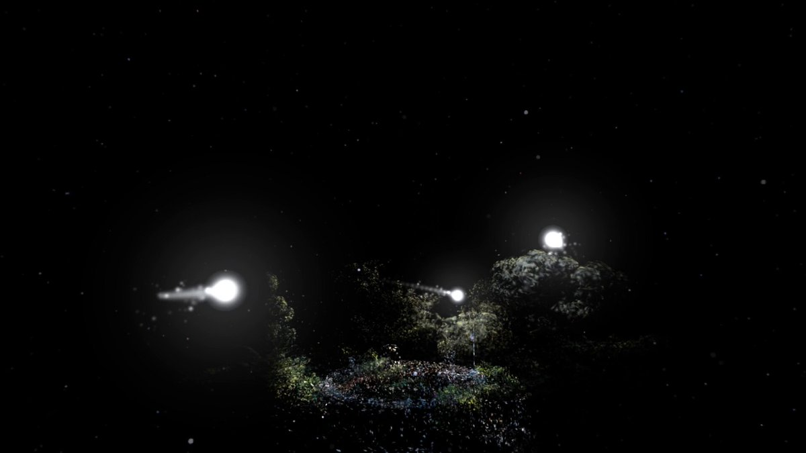
开源渲染器 · WebGPU · 作者自述
spark · @sparkjsdev（World Labs）
把投影、排序和绘制都放到 GPU 上，用 three.js 在浏览器里直接看大场景。值得学的是：同一套泼溅数据，从 WebGL 流式方案走到 WebGPU 整帧排序，移动端和桌面可以共用一条路径。
原发布：2026-10-30 01:05:31（亚洲/上海），X 原帖。作者称为实验性发布。
方法与工具（作者自述）：原帖写：今天分享 Spark Radix 的实验性版本，这是基于 three.js 的 WebGPU 高斯泼溅渲染器，可在浏览器里渲染和探索细致的三维世界，供开发者试用。后续线程写：借助 WebGPU，Radix 每帧在 GPU 上完成投影、排序和绘制；多个泼溅物体一起排序，一次绘制；没有 WebGPU 时回退到 WebGL2。
数据（2026-11-27 15:36 亚洲/上海 核验）：原帖曝光 64441，视频播放 18941，赞 758，转发 96，引用 19，回复 39，收藏 656。曝光刚过 5 万工作线，赞未到 1000。GitHub 于 15:40 核验为 69 星、11 个复刻，许可证 MIT。星数不是本板门槛。
社区反馈（X，2026-11-27 约 15:36 亚洲/上海 抽样，不是全量）：原帖有 39 条回复。本轮用对话搜索未能稳定列出全部回复，无法把批评抽样写全。赞和收藏说明有正向接收，但不把它说成没有批评。
推广与利益：原帖没有付费合作标记。Spark / Radix 是 World Labs 开源的渲染器，文档和 npm 包对外免费。本板把它当作工具发布，不是某一家大模型演示。
此前核对的限度（仍有效）：
和本板同时收录的 Spark 2.0 不是同一条产品线：2.0 主打 WebGL2 上流式 LoD，Radix 是后来的 WebGPU 实验。作者自己标明 experimental。封面几乎是黑底，钉在这块黑板上对比度偏低。本板没有复跑。
上板判断：达标。曝光刚过工作线，赞未到 1000，接收仍明显正向；主手艺是泼溅渲染器，适合这块板。
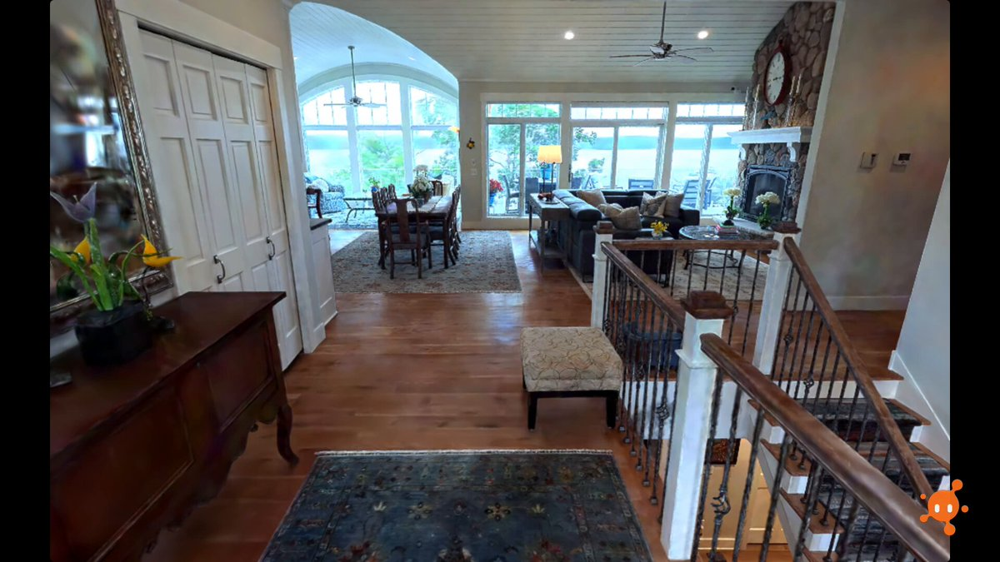
房产扫描 · 消费级 360 相机 · 作者自述
Will Eastcott · @willeastcott（扫描：Tony Rose）
以前扫房产常要上万元的激光雷达，这里用一台大约 500 美元的 Insta360 X5 拍 360 照片，再做成可走的高斯泼溅。值得学的是：消费级全景相机加上免费软件，已经能让看房的人像进游戏一样自己走。
原帖 SuperSplat 场景 Spirula Studio
原发布：2026-09-22 02:26:04（亚洲/上海），X 原帖线程第一条。
方法与工具（作者自述）：原帖写：以前扫一处房产往往意味着 5000 美元的激光雷达；这栋房子是用 500 美元的 Insta360 X5 消费级 360 相机扫的；软件全部免费开源；泼溅生成用 Spirula Studio，渲染用 PlayCanvas；花 500 美元就可以把房产放到网上，让意向买家像玩游戏一样自由走。线程第二条写：扫描者是 Tony Rose，上传到 SuperSplat；当时关闭了流式加载，1500 万高斯要一次全部载入，建议用台式机看，并可在查看器里打开 Performance Mode。作者在回复里写：输入应是 Insta360 X5 间隔模式拍的一系列 360 照片；他自己没有扫这处空间；有人被拍摄者自己挡进画面时，他写拍摄者用 Spirula Studio 把自己从照片里抠掉。稍后他确认拍摄者重新发布了带流式加载的版本。
数据（2026-11-27 15:28 亚洲/上海 核验）：原帖曝光 87342，视频播放 45565，赞 1325，转发 109，引用 7，回复 38，收藏 1855。过线。
社区反馈（X 回复，2026-11-27 15:40 亚洲/上海 抽样，不是全量）：有人加载吃力，作者承认该扫描最初关闭了流式加载，后来请拍摄者重新发布。有人觉得操作不像看房，作者回应默认是点击移动，WASD 是给“玩使命召唤的人”准备的。Kenney 调侃房产中介会不会用扫描误导客户，作者用玩笑挡了回去。也有人讨论要不要在不同高度多扫几遍。
推广与利益：原帖没有付费合作标记。作者是 PlayCanvas 创建者，帖子在推广免费开源工具链，并点名 Insta360。场景不是他拍的，是 Tony Rose 的扫描。Insta360 是被提及的硬件品牌，未见付费合作标记。
此前核对的限度（仍有效）：
与同作者 5 月那条“在房源里 speedrun”是同一类应用，但采集方法不同（消费级 360 相机 + 具名拍摄者），单独成卡。最初发布时 1500 万高斯未开流式，普通设备会卡。本板没有复跑。
上板判断：达标。曝光和赞都过线；值得看的是低成本全景采集怎么走进可走的房产泼溅。
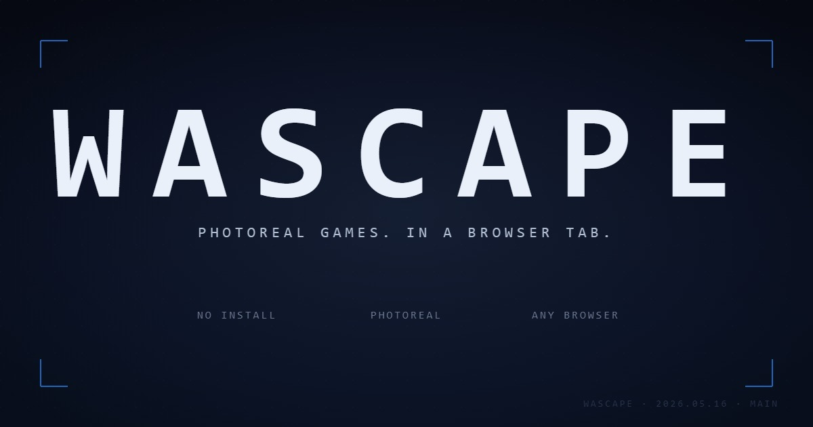
浏览器应用 · 实景驾驶 · 未过 X/YouTube 工作线
u/mini_ster · wascape.com
把扫下来的真实街道流进一个浏览器标签，走路、骑车、开车、飞都能碰壁。值得学的是：泼溅不再只是转着看的模型，而变成可以驾驶的地点。这是 Junie 记得的最近开车应用；它不是带圈速和对手的赛车，传播也未过本板的 X/YouTube 工作线，下面写明限度。
原发布：目前能核对到的最早公开帖是 2026-09-03 22:55:14（亚洲/上海）发在 r/threejs 的帖，作者 u/mini_ster，标题是“I built a photoreal game demo which can be accessed via browser”。同一天在 r/SideProject 也发过。官网官方封面角落写着 “2026.05.16”，但本板没有找到 5 月的公开发布帖，不以封面日期当作原发时间。10 月 11 日又在 r/GaussianSplatting 发过穆贾（Muggia）33M 扫描的步行和飞行。
方法与工具（作者自述）：9 月 3 日原帖写：在浏览器里自由走真实地点，不用下载、安装或注册；用 3D 高斯泼溅把十座、六个国家的扫描城镇直接流进标签页，光线和街道就是拍摄时的样子；可以步行，也可以骑车，带碰撞物理，经 WebGPU 运行；需要 Chrome、Edge，或较新 Mac 上的 Safari 18。官网上写：提供开车、走路、骑车、飞行四种方式；开车有真实车辆物理，会撞上扫描得到的墙；骑车要克服重力，下坡会自己溜；地点是从照片里拟合出的数百万高斯，不是手搭的模型。开发日志把这事概括成“Drive a real place: a real-world scan, streamed and rendered in a browser tab.”
数据（2026-11-27 15:29–15:37 亚洲/上海 核验）：X 和 YouTube 上几乎没有能过线的原帖，不过本板 X（曝光 ≥5 万或赞 ≥1000）和 YouTube（播放 ≥2 万）的工作门槛。作者在 2026-10-30 开发日志里写：10 月站点有 25 万以上的 page views，最忙的一天大约 6.5 万访客，2000 人以上注册；并提醒 page views 不等于人数，同一人跨天会计两次，数字来自他自己的分析服务（日志里写 10 月 22 日额度用尽）。官网把三条 Reddit 的数据标为截至 2026-10-15：r/GaussianSplatting 10 月 11 日帖 4.6 万浏览 / 265 赞；r/threejs 9 月 3 日 2.2 万浏览 / 58 赞；r/SideProject 9 月 3 日 4.6 万浏览 / 83 赞。本轮 15:37 打开 r/threejs 原帖，可见赞 60、评论 42，upvote ratio 0.86；Reddit API 没有返回浏览量，浏览量仍只采用站点标注的 10 月 15 日数字。这些流量可核对到作者自报和 Reddit 互动，但不能当成已经通过 X/YouTube 工作线。
社区反馈（Reddit r/threejs 原帖评论，2026-11-27 15:37 亚洲/上海 抽样）：有人称赞，也有明确批评。有人在 Apple M3 Max、Safari / 中端 PC 上遇到掉帧和“性能很糟”；有人觉得跑步速度和位移不同步；有人说鼠标是反的；有人问这到底是游戏，还是一个能骑车开车的高斯查看器，有没有目标和关卡。作者承认当时还是查看器式演示，并在修性能、同步和鼠标问题。另有人一开始在 Windows 上很卡，后来发现浏览器走了核显而不是独立显卡，改过来就顺了。10 月开发日志补充：高峰期 iOS 没有指针锁定却仍去请求，四天里至少 1400 人踩到这个错误；还有人离开页面后场景还在跑。
推广与利益：没有看到付费合作标记。这是作者自己的产品站点，官网上有 WASCAPE Studio、市场，以及面向汽车、房产、旅游和游戏的商务说明，也提到可在扫描墙面上做广告。9 月评论里有人问源码，作者说“都在，很快会发布”；到本轮核验时，本板没有找到已公开的完整源码仓库，不以开源项目来写。
此前核对的限度（仍有效）：
这不是带计时赛和对手的赛车，而是在真实泼溅地点里开车、骑车、走路和飞行。官方封面是字标，不是某条街道的实景。作者公开身份目前只能核到 Reddit 账号 u/mini_ster。本板没有复跑，也没有核对 Cloudflare 后台原始报表。
上板判断：未过 X/YouTube 工作门槛，作为点名案例收录。Junie 记得最近大火的是一个赛车应用。2026 年秋天里，可玩、可开车、又有较大公开流量的，首先是这个浏览器应用；10 月站点自报出现访问高峰。它不是传统赛车，X/YouTube 也未过线，所以标成临界，不把站点流量写成已经达标。
反射手法 · iPhone 扫描 · 作者自述
abstrakt · @abstrakt314
理发店镜子里的反射看起来很真，作者自己把它叫作“假反射”。值得学的是：泼溅不会自动长出真正的镜面，要让玻璃和镜子可用，常常得另做一层骗过眼睛的办法。
原发布：2026-07-17 22:19:54（亚洲/上海），X 原帖。
方法与工具（作者自述）：原帖写：仍然觉得在高斯泼溅里把反射做假可以做得很像；用 PlayCanvas 的 WebGPU 渲染；泼溅是用 Varjo 的 Teleport iOS 应用在 iPhone 上做的。
数据（2026-11-27 15:36 亚洲/上海 核验）：原帖曝光 84026，视频播放 41327，赞 1215，转发 77，引用 3，回复 18，收藏 556。过线。
社区反馈（X，2026-11-27 约 15:36 亚洲/上海 抽样，不是全量）：原帖有 18 条回复。本轮用对话搜索未能稳定列出全部回复，不能把批评写全，也不把反馈写成一边倒的称赞。
推广与利益：原帖没有付费合作标记。作者简介写自己是 PlayCanvas 团队成员，做 SuperSplat。帖子同时展示 PlayCanvas WebGPU 和 Varjo Teleport 的采集。本板按作品手法收录，并写明供职关系。
此前核对的限度（仍有效）：
作者在标题里就承认反射是“假的”，不要误读成泼溅已经有物理上正确的镜面。本轮没有找到可单独打开的演示页，只能看原帖视频。本板没有复跑。
上板判断：达标。曝光和赞都过线；对导演来说，重点是镜子和玻璃在泼溅里往往要靠做假，而不是指望扫描自动出现。
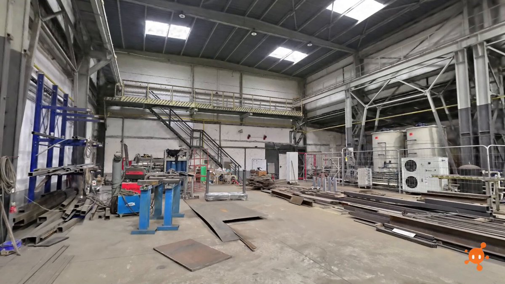
碰撞 · SuperSplat · 作者自述
Will Eastcott · @willeastcott
泼溅本身没有墙，人会穿过去。这里自动生成 5 厘米体素碰撞，体积小，却能爬楼梯、走横梁。值得学的是：要让扫描变成可玩的地方，先解决“脚踩在哪儿”，画面再漂亮也只是一层皮。
原发布：2026-06-25 19:42:40（亚洲/上海），X 原帖。
方法与工具（作者自述）：原帖写：SuperSplat 里的体素碰撞是关键一步；它能把任意高斯泼溅自动转成精确的 5 厘米体素；压缩得很小，比网格更省，却结实到可以爬楼梯、走横梁；PlayCanvas 免费开源。线程第二条给出 Kacper Ormaniec 在 SuperSplat 上的示例场景。
数据（2026-11-27 15:36 亚洲/上海 核验）：原帖曝光 91525，视频播放 56761，赞 1118，转发 154，引用 14，回复 14，收藏 862。过线。
社区反馈（X，2026-11-27 约 15:36 亚洲/上海 抽样，不是全量）：原帖有 14 条回复。本轮用对话搜索未能稳定列出全部回复，不能把批评写全。
推广与利益：原帖没有付费合作标记。作者是 PlayCanvas 创建者，这是在介绍自家开源编辑器的新能力。示例扫描要署名 Kacper Ormaniec。
此前核对的限度（仍有效）：
5 厘米体素是近似碰撞，不是精确网格。和本板 Iakov 的 FPS 演示、以及后文 SuperSplat 大场景流式加载是同一工具生态里的不同步骤，不合并成一张卡。本板没有复跑。
上板判断：达标。曝光和赞都过线；对要把实景扫描做成可走、可玩空间的人，这是关键一步。
开源平台 · 流式加载 · 作者自述
PlayCanvas · @playcanvas
官方用一座铁路转盘扫描演示：2400 万高斯流进浏览器，几乎马上能看，并且稳住 60 帧。值得学的是：大场景能不能用，常常不取决于扫描有多细，而取决于能不能按远近流式加载。
原发布：2026-06-03 21:31:53（亚洲/上海），PlayCanvas 官方 X 帖。
方法与工具（作者自述）：原帖写：SuperSplat 这个免费开源的 3D 高斯泼溅平台迎来重大升级；这里是 2400 万高斯的扫描在浏览器里现场流式加载，几乎立刻载入，并能稳住 60 帧；靠的是新的基于计算着色器的 WebGPU 渲染器，加上自动 LoD 流式加载。
数据（2026-11-27 15:31 亚洲/上海 核验）：原帖曝光 61582，视频播放 21119，赞 867，转发 130，引用 10，回复 28，收藏 694。曝光过 5 万工作线，赞未到 1000。GitHub 于 15:40 核验，playcanvas/supersplat 为 10737 星，许可证 MIT。星数不是本板门槛。
社区反馈（X，2026-11-27 约 15:31 亚洲/上海 抽样，不是全量）：原帖有 28 条回复。本轮用对话搜索未能稳定列出全部回复。同一天 PlayCanvas 工程师 Iakov（@yak32）另发一条对照帖，说《The Matrix Awakens》在当时主机上大约 30 帧，而这个高斯场景可以在他的 2020 款 iPhone 上跑得顺；该条曝光 79719、赞 473（15:32 核验），是同一轮能力的补充发言，不单独立卡，也不把两条数据加总。
推广与利益：原帖没有付费合作标记。这是 PlayCanvas 官方产品更新。本轮没有从原帖展开到单独的 SuperSplat 场景页，封面里的铁路转盘扫描作者本轮未能具名。
此前核对的限度（仍有效）：
这是平台能力演示，不是一个完整的游戏。60 帧是作者对这条演示的自述，本板没有在多台设备上复跑。封面几乎铺满实景，对比度正常。
上板判断：达标。曝光刚过工作线，赞未到 1000，但转发和收藏不低；主手艺是大场景泼溅的流式渲染，适合这块板。
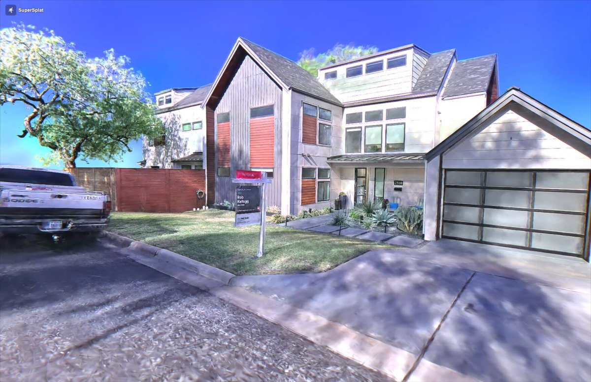
房产可视化 · SuperSplat · 作者自述
Will Eastcott · @willeastcott
把房子扫成高斯泼溅，用游戏那套办法在网页里走。作者的说法是：看房不必再只靠几张照片，买家可以自己在房源里冲一圈。值得学的是：泼溅一旦能走，房产、勘景和空间说明都会换一种看的方式；同时也要听反对的人怎么说“看起来还不如照片”。
原发布：2026-05-07 20:14:59（亚洲/上海），X 原帖。
方法与工具（作者自述）：原帖写：电子游戏技术正在改写房地产；步骤是扫描房子、训练 3D 高斯泼溅、用 PlayCanvas 发布到网页；买家可以在房源里 speedrun；并写可在 SuperSplat 上自己试。原帖里“自己试”后面的短链实际指向这条视频，本轮没有在原帖字段里找到单独的场景页地址。
数据（2026-11-27 15:28 亚洲/上海 核验）：原帖曝光 607651，视频播放 222923，赞 5420，转发 438，引用 62，回复 167，收藏 5687。远超工作线。
社区反馈（X 回复，2026-11-27 15:36 亚洲/上海 抽样，不是全量）：原帖有 167 条回复，本轮只读到一部分。批评里，@soxlej 写“它把房子渲得还不如一张照片”；后来又补“现在都有 8K 了，我不喜欢这种摄影测量熔化的样子”。作者回应：它比照片更能让人理解房子的布局、结构和动线，而且扫描和渲染质量还在很快变好。这类“能走，但看上去发黏、发糊”的意见，比赞更值得导演看。
推广与利益：原帖没有付费合作标记。作者是 PlayCanvas 创建者，帖子在推广 SuperSplat。封面里能看到真实的售房招牌和车辆，是一处真实房源扫描，不是剧情片场。
此前核对的限度（仍有效）：
和 9 月 Insta360 那张卡是同一类“可走的房产泼溅”，但这一张是更早、传播更大的总论，没有在原帖里写死拍摄设备和拍摄者。本板没有找到可单独打开的场景页。本板没有复跑。
上板判断：达标。传播非常大；对导演的价值在于可走的空间说明，以及“还不如照片”这种批评。
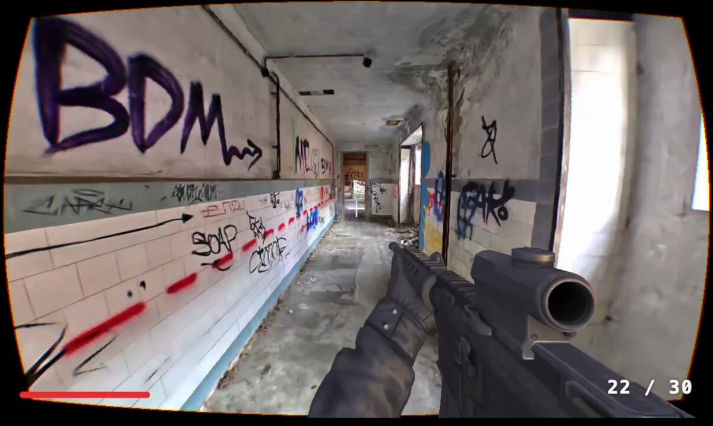
可玩演示 · 实景扫描 · 作者自述
Iakov Sumygin · @yak32
在真实废弃空间的高斯泼溅里加上碰撞、烘焙光照、寻路和会行动的 NPC，变成能在浏览器里玩的射击演示。值得学的是：泼溅只负责看上去像那儿，走路、中弹和 AI 仍然要另做一套网格和逻辑。
原发布：PlayCanvas 博客正文标注 2026-04-22，没有更精确的钟点。X 原帖是 2026-04-23 22:46:30（亚洲/上海）。Hacker News 的 Show HN 提交时间是 2026-04-23 22:18:52（亚洲/上海）。卡片日期按 X 原帖排，博客可能早一天。
方法与工具（作者自述）：X 原帖写：终于做完基于高斯泼溅的 FPS 演示；是 PlayCanvas 项目，在浏览器里运行；基于真实照片扫描；带物理、烘焙光照和会寻路的 NPC。博客写：场景是 Christoph Schindelar 扫描的真实废弃空间；用 splat-transform 做成可流式的 SOG，并生成碰撞网格；再用烘焙的亮度探针、Recast 导航网格、行为树驱动的 8 个有性格的 NPC，以及一套经典射击循环。超级上 SuperSplat 里标记为 Downloadable 的扫描，作者写是按知识共享发布。博客还写，他是在 Cursor 里用 PlayCanvas 的 VS Code 扩展，并可以一边和 Claude 结对写代码。主手艺仍是把泼溅做成可玩空间，不是在演示某个模型。
数据（2026-11-27 15:32–15:36 亚洲/上海 核验）：X 原帖曝光 180073，视频播放 84791，赞 1524，转发 136，引用 17，回复 46，收藏 943。Hacker News 该帖为 236 分、63 条评论（本轮读取页面时的数字）。HN 分数不是本板门槛，只作补充。
社区反馈（Hacker News 评论，本轮读取该帖；X 对话搜索本轮未列出回复）：有人说在 M4 Max 上还算顺，但离替代网格场景的量产方案还早，更看好混合：草和灌木用高斯，主体仍用网格。有人说从艺术家角度看，编辑高斯泼溅仍然很痛苦，得到的往往是没法继续打磨的草稿。也有人提醒：把真实地点扫成可玩地图，可能被用到危险的地方。作者承认混合路线是方向，动态物体不好做，并说演示在手机上用最低设置可以跑，但更推荐桌面。
推广与利益：原帖没有付费合作标记。作者简介写自己在 Snap，正在做 PlayCanvas。博客和演示都挂在 PlayCanvas 官方渠道。场景需署名 Christoph Schindelar；博客写 SuperSplat 上可下载的扫描由作者按知识共享发布，本板未再单独打开该扫描的许可证页。
此前核对的限度（仍有效）：
这是教学演示，不是完整商业游戏。作者写用过 Claude 辅助写代码，但作品的主线是泼溅转游戏，不是模型厂商展示，故放在这块板。封面是第一人称枪械画面，注意不要和现实枪击内容混淆，它是游戏演示。本板没有复跑。
上板判断：达标。X 数据过线；对导演最有用的是“扫描负责样子，碰撞和表演要另做”这一层，以及社区对可编辑性和滥用风险的提醒。
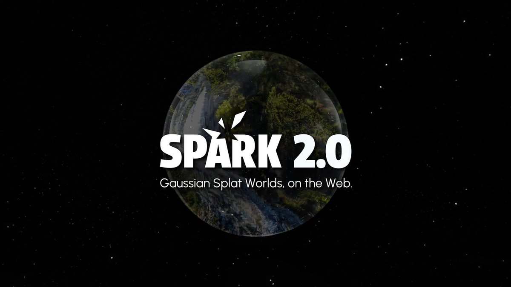
开源渲染器 · 流式 LoD · 作者自述
spark · @sparkjsdev（World Labs）
用 three.js 和 WebGL2，按远近流式加载，让上亿高斯的世界在手机到头显上都能打开。值得学的是：大场景要能被观众打开，关键往往是分层、流式和显存分页，而不是把整个文件一次丢进标签页。
原发布：2026-04-15 00:28:48（亚洲/上海），X 正式发布帖。更早的开发者预览帖在 2026-02-21（亚洲/上海），本卡以 2.0 正式发布为准，不把预览和正式版算成两张卡。
方法与工具（作者自述）：原帖写：Spark 2.0 用可流式的 LoD 系统做 3D 高斯泼溅；建立在 three.js 上，可把超过 1 亿高斯的世界流到从手机到 VR 的各种设备，使用 WebGL2，全部开源。线程里把三个核心系统写成：连续 LoD 树、渐进式 .RAD 流式加载，以及 GPU 虚拟内存分页。官方博客在 World Labs 站点。线程里举过 Coit Tower（4000 多万高斯）和游戏 STARSPEED 里上亿高斯关卡的例子。
数据（2026-11-27 15:30 亚洲/上海 核验）：正式发布帖曝光 422608，视频播放 92764，赞 2040，转发 311，引用 63，回复 41，收藏 1773。远超工作线。GitHub 于 15:40 核验，sparkjsdev/spark 为 3981 星、599 个复刻，许可证 MIT。星数不是本板门槛。
社区反馈（X 引用抽样，2026-11-27 15:40 亚洲/上海，不是全量回复）：看到的引用以称赞和转述为主，例如中文账号说“本月最好玩的东西出来了”。本轮对话搜索没有列出完整回复树，也没有在已抽样的引用里读到集中的技术批评。不把这一点写成“没有批评”。
推广与利益：原帖没有付费合作标记。Spark 是 World Labs 的开源渲染器，博客发在公司站点。STARSPEED 等是使用方案例，不是这张卡的主体。本板把它当泼溅工具，不是大模型演示。
此前核对的限度（仍有效）：
和后文的 Spark Radix 是不同时间的两条发布，不合并。Coit Tower 演示链到 World Labs 的 CDN 页面，本板没有长期保证该链接仍可打开。本板没有复跑。
上板判断：达标。传播很大；对导演的价值是如何让巨大的实景或生成场景，真的能在普通设备的浏览器里打开。
驾驶演示 · 2025 · 作者自述
MrNeRF · @janusch_patas
作者把“在泼溅里开车”比成 YouTube 上的步行巡礼，并想象有一天连驾照考试都可以在这种模拟器里进行。值得学的是：实景泼溅一旦能被开车穿过，就会从观看变成训练和体验。本轮没有找到可公开打开的应用地址，它过了传播线，但不是这次点名的那个最近的开车应用。
原发布：2025-10-17 23:58:13（亚洲/上海），X 原帖。
方法与工具（作者自述）：原帖全文是：3D Gaussian Splatting Driving Simulator；你知道那些 YouTube 步行巡礼吗？作者觉得在泼溅里开车，或在 3DGS 模拟器里考驾照，也可能变成类似的潮流。原帖没有再写训练软件、数据来源或是否对公众开放试玩。
数据（2026-11-27 15:30 亚洲/上海 核验）：原帖曝光 139742，视频播放 53080，赞 1202，转发 163，引用 18，回复 28，收藏 460。过线。更早一条 2025-02-18 的相关驾车视频由作者自己发出（https://x.com/janusch_patas/status/1891600479383097503），曝光 20563、赞 371，未过线；Bilawal Sidhu 第二天的转发帖曝光 241095、赞 2754，那是转述，不拿来给原作凑门槛，也不单独立卡。
社区反馈（X，2026-11-27 约 15:30 亚洲/上海 抽样，不是全量）：原帖有 28 条回复。本轮用对话搜索未能稳定列出全部回复，不能把批评写全。
推广与利益：原帖没有付费合作标记。作者是以 MrNeRF 为人所知的研究者和传播者。本轮没有核对到与这条演示绑定的商业产品页。
此前核对的限度（仍有效）：
本轮没有找到这条演示的公开试玩地址或对应论文页，不能把它写成已经上线的应用。封面是驾驶舱实拍，不是泼溅画面本身。时间是 2025 年 10 月，比 WASCAPE 早将近一年，不是 Junie 说的“最近”那一个。本板没有复跑。
上板判断：达标。传播过线，主题就是在泼溅里开车；作为更早的驾驶案例收录，但不把它说成这次点名的那个应用。